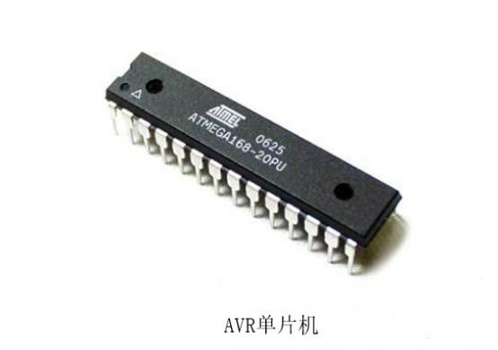
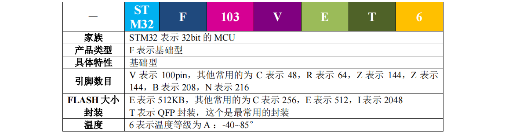
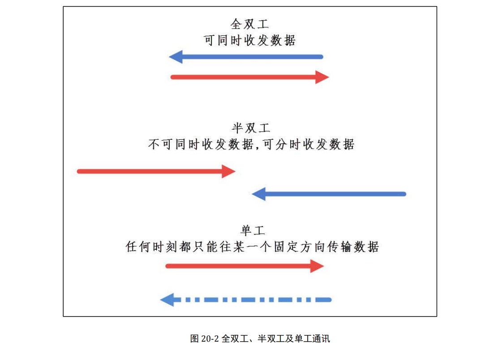
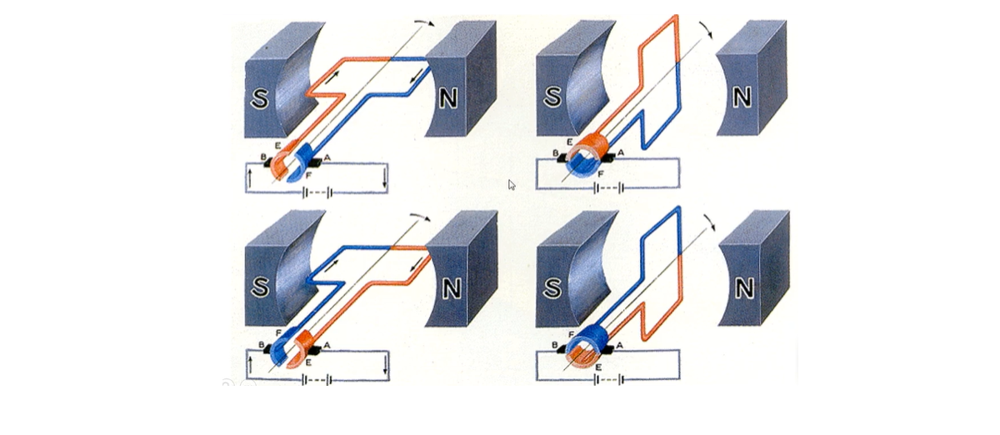
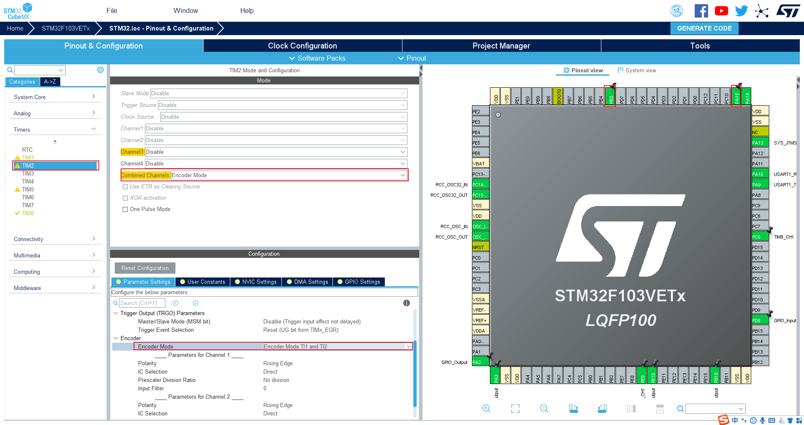
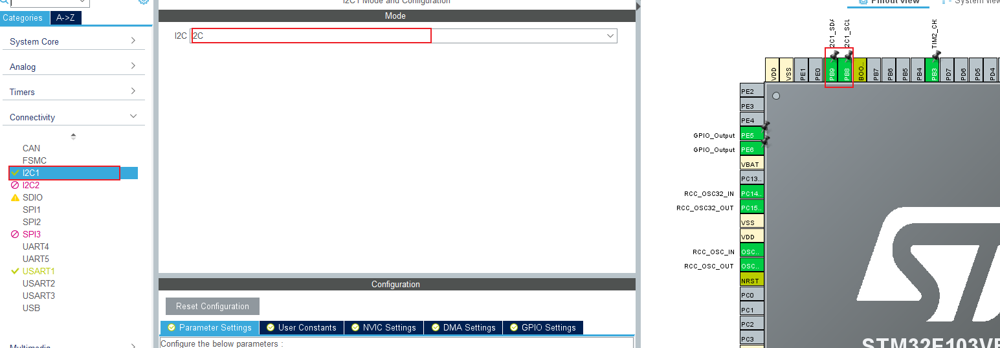

STM32开发¶
课程目的¶
-
了解嵌入式开发的流程
-
熟悉STM32F103开发板
- 熟悉常见的开发板原理图
- 会使用HAL库开发STM32F103单片机
- 会通过PWM方波控制舵机转角
- 会通过PWM方波控制马达转速
- 封装高可用的下位机代码
上位机和下位机¶
上位机是指可以直接发出操控命令的计算机，一般是PC/host computer/master computer/upper computer,屏
幕上会显示各种信号变化。
下位机是指可以直接控制设备获取设备状况的计算机，一般是PLC/单片机之类。
嵌入式¶
什么是嵌入式¶
国内普遍认同的嵌入式系统定义是：“以应用为中心，以计算机技术为基础，软硬件可裁剪，适应应用系统对功能可靠性，成本体积功耗等严格要求的专用计算机系统”。
除了桌面PC之外，所有的控制类设备，都称之嵌入式。
嵌入式的方向¶
1.单片机：(指:51、STM32)工控程序
2.ARM：主要方向
①写底层驱动：这个入门，深入都不容易，需要对硬件及os有较深的了解，前景很不错（月薪可有20k左右）；
②操作系统-linux，android等，现在很多手机厂商推出的操作系统也是基于Linux的，修改内核，换皮肤
③应用程序：就是android开发或者Linux上应用开发（QT等）
3.FPGA：就是硬件编程，入门很简单，做深很难，FPGA近年的一大热门就是芯片
4.DSP：就是数字信号处理
单片机¶
单片机（Single-Chip Microcomputer或MCU:Microcontroller Unit）是一种集成电路芯片，是采用超大规模集成
电路技术把具有数据处理能力的中央处理器CPU、随机存储器RAM、只读存储器ROM、多种I/O口和中断系统、定
时器/计数器等功能（可能还包括显示驱动电路、脉宽调制电路、模拟多路转换器、A/D转换器等电路）集成到一
块硅片上构成的一个小而完善的微型计算机系统，在工业控制领域广泛应用。
常见的单片机¶
单片机从当初的4位发展到8位、32位，甚至更高，到现在种类繁多而且齐全，数量庞大，在不同的领域主流的单片机有不同，常用的单片机有:
1.51单片机
51单片最初是由Intel始创的8004单片机开始，这是8位的单片机，特点是：寄存器少,很多功能需要外部扩展，但是它的外围电路相对简单，上手容易，适合入门级，很多高校单片机都是以51单片机教学为主。目前生产51单片机的厂家有：英特尔、艾德梅尔、西门子、华邦以及国产的宏晶等
2.AVR系列单片机
AVR单片机是由Atmel公司最初提出，也是8位单片机，后来也有16位的，但是与51不一样，它内部指令大大简化，同时内部结构精简，因此速度更快，功能更加强大，驱动能力比51的强，功耗也很低，抗干扰能力更强，内部有强劲的Flash程序存储器，烧录快捷方便

3.STM32系列单片机
STM32系列单片机是有ST公司推出的，表示ARM Cortex-M内核的32位微控制器，芯片功能更加强大
4.MSP430系列单片机
MSP430单片机TI德州仪器公司推出的，这种单片机是16位超低功耗芯片，它的内部指令集也极具精简，内部集成了较为丰富的片内外设，有各类定时器各种通讯协议、液晶驱动器、高精度数模转换、USB控制器等，这种单片机特点是运算速度快、处理能力强、功耗低等。这种芯片主要是针对实际应用需求场合应用，主要应用在智能电子锁、键盘门禁、读取器、电梯轿厢呼叫按钮、无线扬声器、可视门铃等
5.PIC系列单片机
较为出名的是Microchip公司（中文名：微芯半导体）的PIC芯片，这家公司PIC系列出货量居于业界领导者地位。PIC芯片的指令集也较为精简。Microchip8位、16位和32位单片机，拥有功能强大的架构、灵活的存储器技术、通讯方式涵盖SPI、I2C、UART、CAN、USB、以太网等、内部集成了图形以及触摸传感控制器等电路、各类比较器、A/D转换器等应有尽有，目前Microchip的PIC单片机8位的典型代表有： PIC10 PIC12 PIC16 PIC18，PIC系列单片机主要是用来开发和控制外围设备的一种芯片，对于庞大的系统，有些场合如果用此芯片控制可以进行高度集成化，减少外围电路。主要应用在电机、医疗、家电、有限连通、汽车领域、电池管理方案、智能能源等
6.M68HC系列单片机
这是MOTOROLA推出的单片机，摩托罗拉作为单片机最大生产商之一，它的M68HC系列单片机特点是速度快、功能强大、功耗低等，带flash重复擦写且供电电源单一、支持在线编程，最主要的额是它内部采用的时钟频率很低，抗干扰能力很强，因此很适合在工控领域使用。

单片机芯片¶
一般使用的都是ARM芯片.
arm芯片又包含下面几种:
Cortex-A:应用级别处理器 手机 pad 频率高 运行速度快 寿命短 快消领域 电子产品
Cortex-A53 Cortex-A73 Cortex-A76 Cortex-A77
Cortex-M:微控制器 频率低 寿命长 稳定性高 工业领域
Cortex-M0/M3/M4/M7
经典芯片:ARM7 ARM9 ARM11 市场很少使用
有些智能硬件为了兼顾高性能和低功耗,双芯 华米手表
STM32¶
STM32简介¶
STM32，ST 是意法半导体，M 是 Microelectronics 的缩写，32 表示32 位，合起来理解，STM32 就是指 ST 公司开发的 32 位微控制器。
STM32能做什么¶
STM32 属于一个微控制器，自带了各种常用通信接口
- USART串口,用于跟串口接口设备通信,比如USB转串口模块,ESP8266WIFI,GPS模块,GSM模块,串口屏,指纹识别
- 内部集成电路-I2C,用于I2C接口的设备通信,比如:EEPROM,电容屏,陀螺仪MPU6050,0.96寸OLED模块
- 串行通信接口-SPI,用于跟SPI接口的设备通信,比如:串行FLASH,以太网W5500,音频模块VS1053
- SDIO,FSMC超级,I2S,ADC,GPIO
常见的STM32电子产品¶
智能手环可以通过STM32集成心率传感器和mpu芯片等芯片实现
小米无人机基于stm32f407
科沃斯扫地机器人基于stm32f0
三星Gear Fit基于STM32F439ZIY6S
STM32分类¶
STM32 有很多系列，可以满足市场的各种需求，从内核上分有 Cortex-M0、M3、M4和 M7 这几种，每个内核又大概分为主流、高性能和低功耗。
STM32的命名方法¶

以STM32F103VET6 来讲解下 STM32 的命名方法

引脚，又叫管脚，英文叫Pin。就是从集成电路（芯片）内部电路引出与外围电路的接线，所有的引脚就构成了这块芯片的接口。
STM32开发板¶
单片机只是一个芯片，要加 一些外围电路才能 实现常用的功能,比如我们需要购买如下硬件
- STM32(最小系统即可)
- ST-LINK v2下载器
- 面包板
- 杜邦线若干
- 电阻
- LED小灯泡若干
- 带编码器电机
- 按键开关
- 陀螺仪
我们还可以购买网上一些集成好所有功能的电路板,这样我们在学习的过程中,会大大降低硬件连接产生的问题.
单片机开发板就是单片机主芯片加一些常用电子器件而组成的电路板，方便初学者学习和实验
我们这套课程采用如下电路板进行开发:
MPU9250 内部集成有 3 轴陀螺仪、3 轴加速度计和 3 轴磁力计
蜂鸣器是一种能将音频信号转化为声音信号的发音器件,蜂鸣器主要用于提示或报警，根据设计和用途的不同，能发出音乐声、汽笛声、蜂鸣声、警报声、电铃声等各种不同的声音。
CH340指的是USB转TTL电平的芯片。
SWD:serial wire debug串行线调试
CAN:是控制器局域网络(Controller Area Network, CAN)的简称
原理图¶
原理图，就是用来描述一个电路板内部的连接结构的
GPIO¶
GPIO (General-purpose input/output)是通用输入输出端口的简称，简单来说就是 STM32 可控制的引脚，
STM32 芯片的 GPIO 引脚与外部设备连接起来，从而实现与外部通讯、控制以及数据采集的功能。
GPIO分组
STM32 芯片的 GPIO 被分成很多组，每组有 16 个引脚，如型号为 STM32F103VET6 型号的芯片有 GPIOA、GPIOB、GPIOC至 GPIOE共 5组 GPIO，芯片一共 100个引脚，其中 GPIO就占了一大部分，所有的 GPIO 引脚都有基本的输入输出功能。
GPIO模式
GPIO有输入模式和输出模式
GPIO最基本的输出功能是由 STM32 控制引脚输出高、低电平，实现开关控制，如把 GPIO引脚接入到 LED灯，就可以控制 LED灯的亮灭.
最基本的输入功能是检测外部输入电平，如把 GPIO 引脚连接到按键，通过电平高低区分按键是否被按下。
STM32开发之HAL库¶
STM32的时候，首先都要先选择一种要用的开发方式，不同的开发方式会导致你编程的架构是完全不一样的。
一、直接配置寄存器
通过汇编语言直接操作寄存器实现功能.
STM32的寄存器数量是51单片机的十数倍，如此多的寄存器根本无法全部记忆，开发时需要经常的翻查芯片的数据手册，此时直接操作寄存器就变得非常的费力
二、标准库
ST公司就为每款芯片都编写了一份库文件，也就是工程文件里stm32F1xx…之类的。在这些 .c .h文件中，包括一些常用量的宏定义，把一些外设也通过结构体变量封装起来，如GPIO口时钟等。所以我们只需要配置结构体变量成员就可以修改外设的配置寄存器，从而选择不同的功能。也是目前最多人使用的方式，也是学习STM32接触最多的一种开发方式
三、HAL库
HAL库是ST公司目前主力推的开发方式，全称就是Hardware Abstraction Layer（抽象印象层）。
HAL库比标准库开发效率更高，标准库集成了实现功能需要配置的寄存器，HAL库的一些函数甚至可以做到某些特定功能的集成。
HAL库也很好的解决了程序移植的问题，不同型号的stm32芯片它的标准库是不一样的，例如在F4上开发的程序移植到F3上是不能通用的，而使用HAL库，只要使用的是相通的外设，程序基本可以完全复制粘贴
而且使用ST公司研发的STMcube软件，可以通过图形化的配置功能，直接生成整个使用HAL库的工程文件
三、LL库
LL库（Low Layer）是ST最近新增的库，与HAL捆绑发布，文档也是和HAL文档在一起的，LL库更接近硬件层，对需要复杂上层协议栈的外设不适用
编程语言:一般标准C语言,也可以引用c++实现的功能
开发环境搭建¶
工欲善其事必先利其器,这一章节我们主要来给大家介绍如何搭建STM32的开发环境,这里我们使用软件工程师都熟
悉的Clion开发.在后续的开发过程中,我们可以看到Clion要比传统的硬件开发软件Keil要好用的多得多!
安装stm32cubemx¶
cubemx是ST公司推出的一款非常方便的图形化工具软件,它让我们能够快速的对芯片引脚进行配置.
这里我们我们就先简单介绍一下它的安装步骤:
- 执行 jdk-8u181-windows-x64.exe,一路下一步,没有下一步就点击finish
- 解压en.stm32cubemx_v5.4.0.zip并执行SetupSTM32CubeMX-5.4.0.exe
- 点击下一步下一步就可以完成安装
- 安装完成之后，直接打开程序即可.

安装arm-none-eabi-gcc¶
arm-none-eabi-gcc是一个交叉编译工具链. 它让我们能在windows环境下对代码进行编译,然后代码可以在单片机里面运行.
交叉编译:在一个平台给另外一个平台编译代码
解压arm的交叉编译工具
解压:gcc-arm-none-eabi-9-2019-q4-major-win32.zip
将它的根目录和bin路径配置到系统的Path中
安装FlyMcu¶
FlyMcu是一款非常非常好用的stm32最新串口烧写器，它可以帮助用户连接上通讯所使用的串口，能够很方便地烧写程序.
解压FlyMcu.zip可以直接使用.
项目创建¶
可以使用STM32CubeMX创建工程
选择芯片¶
STM32F103VETx和STM32F103VEHx区别就是封装方式不同
LQFP64、LQFP100和LFBGA100三种封装
打开串口调试¶
debug:Serial wire、JTAG-4、JTAG-5
配置时钟¶
时钟就是程序执行效率
72Mhz指的是1秒钟执行72 000 000次
工程配置¶
生成代码¶

使用clion打开代码即可¶
使用FlyMcu烧录程序¶
LED灯¶
LED（Light Emitting Diode），发光二极管，是一种能够将电能转化为可见光的固态的半导体器件，它可以直接
把电转化为光。LED可以直接发出红、黄、蓝、绿、青、橙、紫、白色的光。
我们需要用到单片机的GPIO来控制单片机去驱动LED灯。
首先，需要查看原理图，查找LED灯的引脚
在STM32CubeMx中将PE10引脚设置为输出
按照电路图,LED的一端已经连接了高电平, 那么PE10这一端我们需要给它低电平,才能让灯亮起来
HAL_GPIO_WritePin(GPIOA,GPIO_PIN_1,GPIO_PIN_RESET);
如果想让灯灭的话, 我们需要给PE10这一端设定为高电平
HAL_GPIO_WritePin(GPIOA,GPIO_PIN_1,GPIO_PIN_SET);
如果想让LED间隔一定时间闪烁的话,我们可以采用如下的方式:
// 闪烁led灯
HAL_GPIO_WritePin(GPIOA,GPIO_PIN_1,GPIO_PIN_SET);
HAL_Delay(500);
HAL_GPIO_WritePin(GPIOA,GPIO_PIN_1,GPIO_PIN_RESET);
HAL_Delay(500);
蜂鸣器¶
蜂鸣器是一种能将音频信号转化为声音信号的发音器件,蜂鸣器主要用于提示或报警，根据设计和用途的不同，能
发出音乐声、汽笛声、蜂鸣声、警报声、电铃声等各种不同的声音。
蜂鸣器的控制和LED一致
开关的使用¶
我们将使用GPIO来读取开关状态,其实就是要读取IO口的电平变化.
首先,查看引脚

设置PD8引脚为输入

读取电平状态
// 读取状态
GPIO_PinState state = HAL_GPIO_ReadPin(GPIOD, GPIO_PIN_8);
通信的基本概念¶
在计算机设备与设备之间或集成电路之间常常需要进行数据传输
串行通讯与并行通讯¶
按数据传送的方式，通讯可分为串行通讯与并行通讯，串行通讯是指设备之间通过少量数据信号线(一般是 8 根以
下)，地线以及控制信号线，按数据位形式一位一位地传输数据的通讯方式。而并行通讯一般是指使用 8、16、32
及 64 根或更多的数据线进行传输的通讯方式
在数据传输速率相同的情况下，并行通讯传输的数据量要大得多，而串行通讯则可以节省数据线的硬件成本
全双工、半双工及单工通讯¶
根据数据通讯的方向，通讯又分为全双工、半双工及单工通讯，它们主要以信道的方向来区分

同步通信和异步通信¶
根据通讯的数据同步方式，又分为同步和异步两种，可以根据通讯过程中是否有使用到时钟信号进行简单的区分。
简单的说就是主机在相互通信时发送数据的频率是否一样。

通讯速率¶
衡量通讯性能的一个非常重要的参数就是通讯速率，通常以比特率(Bitrate)来表示，即每秒钟传输的二进制位数，
单位为比特每秒(bit/s)。
容易与比特率混淆的概念是“波特率”(Baudrate)，它表示每秒钟传输了多少个码元。而码元是通讯信号调制的概
念，通讯中常用时间间隔相同的符号来表示一个二进制数字，这样的信号称为码元。如常见的通讯传输中，用 0V
表示数字 0，5V 表示数字 1，那么一个码元可以表示两种状态 0 和 1，所以一个码元等于一个二进制比特位，此时
波特率的大小与比特率一致；如果在通讯传输中，有 0V、2V、4V 以及 6V 分别表示二进制数 00、01、10、11，
那么每个码元可以表示四种状态，即两个二进制比特位，所以码元数是二进制比特位数的一半，这个时候的波特率
为比特率的一半。因为很多常见的通讯中一个码元都是表示两种状态，人们常常直接以波特率来表示比特率。
常见的波特率为4800、9600、115200 等。
USART串口通信¶
串口通信¶
串口通讯(Serial Communication)是一种设备间非常常用的串行通讯方式，因为它简单便捷，因此大部分电子设备
都支持该通讯方式，电子工程师在调试设备时也经常使用该通讯方式输出调试信息。
对于通讯协议，可以分为物理层和协议层。
物理层规定通讯系统中具有机械、电子功能部分的特性，确保原始数据在物理媒体的传输。就是硬件部分
协议层主要规定通讯逻辑，统一收发双方的数据打包、解包标准。就是软件部分
物理层规定我们用嘴巴还是用肢体来交流，协议层则规定我们用中文还是英文来交流。
物理层
物理层常见的标准RS232、RS485、USB转串口(TTL)以及原生的串口到串口(TTL-TTL)
协议层
数据包组成

USART 简介¶
通用同步异步收发器(Universal Synchronous Asynchronous Receiver and Transmitter)是一个串行通信设备，
可以灵活地与外部设备进行全双工数据交换。有别于 USART 还有一个UART(Universal Asynchronous Receiver
and Transmitter)，它是在 USART 基础上裁剪掉了同步通信功能，只有异步通信。
USART 在 STM32 应用最多莫过于“打印”程序信息，一般在硬件设计时都会预留一个USART通信接口连接电脑，用
于在调试程序是可以把一些调试信息“打印”在电脑端的串口调试助手工具上，从而了解程序运行是否正确、如果出
错哪具体哪里出错等等。
USART通信配置¶
- 连接CH340串口
- 在STM32CubeMX中打开USART通信

RX是接收 TX是发送
发送数据¶
char data[] = "hello world!\r\n";
HAL_UART_Transmit(&huart1,data, sizeof(data),3000);
接收数据¶
char data[20] = {0};
HAL_UART_Receive(&huart1,data,20,3000);
中断方式接收信息¶
中断¶
中断，在单片机中占有非常重要的地位。代码默认地从上向下执行，遇到条件或者其他语句，会按照指定的地方跳
转。而在单片机执行代码的过程中，难免会有一些突发的情况需要处理，这样就会打断当前的代码，待处理完突发
情况之后，程序会回到被打断的地方继续执行。

中断接收串口消息¶
- 在cubemx中开启中断
- 重写
HAL_UART_RxCpltCallback函数
void HAL_UART_RxCpltCallback(UART_HandleTypeDef *huart){
// 将接收到的内容重新发送出去
HAL_UART_Transmit(&huart1,rx_data, 1,3000);
// 需要重新使能中断接收
HAL_UART_Receive_IT(&huart1,rx_data,1);
}
- 开始中断接收
HAL_UART_Receive_IT(&huart2,RX,1);
在
stm32f1xx_it.c中USART1_IRQHandler函数是处理回调的,进入实现HAL_UART_RxCpltCallback是回调
HAL_UART_TxHalfCpltCallback();一半数据发送完成时调用
HAL_UART_TxCpltCallback();数据完全发送完成后调用
HAL_UART_RxHalfCpltCallback();一般数据接收完成时调用
HAL_UART_RxCpltCallback();数据完全接受完成后调用
HAL_UART_ErrorCallback();传输出现错误时调用
重定向printf¶
在STM32开发中我们其实也可以像C语言那样使用printf进行输出，只不过C语言中默认输出到控制台中，而
stm32没有控制台，我们需要将它重定向到串口中，所用我们可以采用重写printf底层函数的方式来做。
- 重写
__io_putchar和fputc
#ifdef __GNUC__
#define PUTCHAR_PROTOTYPE int __io_putchar(int ch)
#else
#define PUTCHAR_PROTOTYPE int fputc(int ch, FILE *f)
#endif
PUTCHAR_PROTOTYPE
{
// 参数1： 使用哪个usart ,参数2： 字符， 参数3：输出数量，参数4：超时等待时间
HAL_UART_Transmit(&huart1 , (uint8_t *)&ch, 1 , 0xffff);
return ch;
}
注意:
需要导入头文件
#include <stdio.h>输出需要加上\r\n
- 如果不想加上
\r\n,可以继续添加如下代码
#define LOG_ENABLE 1
#if LOG_ENABLE
#define log(format,...) printf(format"\r\n",##__VA_ARGS__)
#else
#define log(format,...)
#endif
- 输出浮点数
我们所使用的库，默认是没有开启浮点数输出的,可以修改CMakeLists.txt
SET(COMMON_FLAGS
"-mcpu=cortex-m3 ${FPU_FLAGS} -mthumb -mthumb-interwork -ffunction-sections -fdata-sections \
-g -fno-common -fmessage-length=0 -specs=nosys.specs -specs=nano.specs -u _printf_float")
注意:
改动完成之后,请在tools→Cmake→Reset Cache and Reload Project再build
常见电机¶
电机:俗称"马达",依据电磁感应定律实现电能转换或传递的一种电磁装置.包括电动机和发电机.
电动机在电路中是用字母M表示,它的主要作用是产生驱动转矩,作为用电器或各种机械的动力源,发电机在电路中用字母G表示,它的主要作用是利用机械能转换为电能.
电机控制:
速度控制
位置控制
转矩控制
直流有刷电机原理:

PWM方波¶
什么是PWM¶
脉冲宽度调制(PWM)，是英文“Pulse Width Modulation”的缩写，简称脉宽调制，是利用微处理器的数字输出来对
模拟电路进行控制的一种非常有效的技术，广泛应用在从测量、通信到功率控制与变换的许多领域中。
灯亮度调节方式:DC调节以及PWM调节
DC调光
DC调光就是通过提高或降低电路功率来改变屏幕的亮度。功率 ＝ 电压 x 电流，所以改变电压或电流都能改变屏幕亮度。
PWM调光
PWM调光靠屏幕的亮、灭交替来完成。PWM调光屏幕点亮时并不是持续发光的，而是在不停地点亮、熄灭屏幕。当亮、灭交替够快时，肉眼就会认为手机一直在亮。
在屏幕亮、灭的过程中，灭屏状态持续时间越长，屏幕给肉眼的观感就是亮度越低。点亮的时间越长，灭屏时间就相应减少，屏幕就会变亮。
PWM总结
PWM它是一系列脉冲，这些脉冲将以方波的形式出现。在任何给定的时间点，波型要么是高电平或者是低电平。
信号保持在高电平的持续时间称为“接通时间”，信号保持在低电平的持续时间称为“断开时间”。对于PWM信号我们
需要关注两个与之相关的重要参数，一个是PWM占空比，另一个是PWM信号的频率。
PWM占空比¶
PWM信号在特定的时间内保持接通状态，然后在剩余的时间内保持断开状态。占空比是指在一个脉冲循环内，接
通时间相对于总时间所占的比例。在一段连续工作时间内脉冲高电平时间与总时间的比值。如果信号总是处于高电
平，它的占空比是百分之百；如果信号总是处于低电平，那么它的占空比是0%。计算占空比的公式如下所示：
占空比 =接通时间 / (接通时间 + 断开时间)
通过控制从0%到100%的占空比，我们可以控制PWM信号的“接通时间”，从而控制信号的宽度。由于我们可以通
过调节脉冲信号的宽度控制接通时间，所以将这种控制方式称为“脉冲宽度调制”。
PWM的频率¶
PWM信号的频率决定了PWM完成一个信号周期的速度。周期是指PWM信号完成一个接通和关闭的时间。计算频
率的公式如下所示
频率 = 1 / 总持续时间
总持续时间 = 接通时间 + 断开时间
PWM的产生¶
单片机来产生pwm，有以下几种方法，
第一种就是用指令来形成pwm，这种方法可以产生，分辨率很高的pwm，但是这样会影响其他任务的运行，一般使用在比较简单的控制中。
另外一种就是用，定时器来产生pwm
还有的单片机本身具有pwm模块功能
定时器¶
定时器功能
定时、输出比较(PWM)、输入捕获(测量脉冲宽度)、互补输出
定时器分类
基本定时器、通用定时器、高级定时器
定时器资源
F103系列有两个高级定时器TIM1和TIM8、4个通用定时器TIM⅔/⅘、2个基本定时器
基本定时器（TIM6，TIM7）的主要功能： 只有最基本的定时功能。基本定时器TIM6和TIM7各包含一个16位自动装载计数器，由各自的可编程预分频器驱动
通用定时器(TIM2~TIM5)的主要功能: 除了基本的定时器的功能外，还具有测量输入信号的脉冲长度( 输入捕获) 或者产生输出波形( 输出比较和PWM)
高级定时器（TIM1，TIM8）的主要功能： 高级定时器不但具有基本，通用定时器的所有的功能，还具有控制交直流电动机所有的功能，你比如它可以输出6路互补带死区的信号，刹车功能等等
驱动电机¶
1和6控制电机,2345控制编码器
1和6连接驱动芯片TB6612
电路板3.3v,电机12v
- 配置配置
PA2和PA3
- 配置PC6发送PWM方波引脚
- 配置TIM8定时器
计数周期：在工程开始配置的频率是72MHZ
现在配置的是7200-1 相当于0.1ms周期 (因为库默认会+1，所以这里-1)
- 控制电机代码
//开启定时器
HAL_TIM_PWM_Start(&htim8,TIM_CHANNEL_1);
//通电 可以控制正反转
HAL_GPIO_WritePin(GPIOA,GPIO_PIN_2,GPIO_PIN_SET);
HAL_GPIO_WritePin(GPIOA,GPIO_PIN_3,GPIO_PIN_RESET);
//控制占空比 在配置的7200次计数中 5000次发送
__HAL_TIM_SET_COMPARE(&htim8,TIM_CHANNEL_1,3000);
驱动舵机¶
舵机简介¶
舵机最早用于船舶上实现转向功能,由于可以通过程序连续控制其转角,因而被广泛应用于智能小车转向以及机器人各类关节中.
舵机由直流电机、减速齿轮组、传感器和控制电路组成的一套自动控制系统.通过发送信号,指定输出轴旋转角度.舵机一般而言都有最大旋转角度(比如180度)
与普通直流电机的区别是:直流电机是一圈圈转动的,舵机智能在一定角度内转动,不能一圈圈转动.普通的直流电机无法反馈转动的角度信息,而舵机可以.
用途也不相同,普通直流电机一般是整圈转动做动力用,舵机是控制某物体转动一定角度用(比如机器人的关节)
舵机信号线
棕色接地 中间红线5v 橙色信号线
驱动舵机¶
- 配置
PE9引脚
- 配置
TIM1
- 驱动舵机
HAL_TIM_PWM_Start(&htim1,TIM_CHANNEL_1);
// 下面通过不同的占空比来控制角度
__HAL_TIM_SET_COMPARE(&htim1,TIM_CHANNEL_1, 500); //对应0度
舵机的转动角度¶
一般来说，舵机接收的PWM信号频率为50HZ，即周期为20ms。当高电平的脉宽在0.5ms-2.5ms之间时舵机就可
以对应旋转到不同的角度。如下图。
分频系数¶
可以通过设置分频系数和计数值简便得到50hz的频率.
在这里我将分频系数设置为72,将计数值设置为20000.下面我们来计算一下频率:
72M = 72000000
频率 = 72000000/72 = 1000000hz
经过上面的公式,我们已经得到了10000hz,也就是1s中会变化10000次,那每变化一次需要多长时间呢?这里我们可
以套用下面的公式
1s = 1000ms
1s/1000000 = 1000ms/1000000 = 0.001ms
这里的0.001ms说的就是每隔0.001ms计数值加1,讲到这里我相信大家应该知道计数值最大值应该填入多少了吧!
按照前面的规定,我们如果想要在20ms周期中得到0.5ms的高电平,那么pwm的占空比的计算方式应该如下:
0.5ms/20ms = pwm/20000
其中200为上面我们设定的最大计数值,所以计算结果应该为:
pwm = 0.5ms/20ms*20000 = 500
单片机的时钟频率是72M ,如果我们想得到50hz的频率,那么我们需要设置分频系数和计数值.在这里我将分频
系数设置为72,将计数值设置为20000.
编码器¶
编码器是什么?¶
编码器是一种将角位移或者角速度转换成一串电数字脉冲的旋转式传感器。分为光电编码器和霍尔编码器。
编码器的工作原理¶
通过在电机的传动轴上加装一个码盘,电机带动码盘转动, 而发射机与接收器成一对,
- 当光线穿过码盘上的孔的时候,我们假定接收器收到了高电平
- 当光线被阻断的时候,我们认为接收器收到了低电平
这样通过计算单位时间内高电平的次数除以码盘的孔数我们就可以很轻松的计算出电机的转速
我们常用的是霍尔编码器也称AB相编码器,它通过电路信号的变化来获取电机的转速,还可以计算电机转动的方向

电机型号:JGB37-520
获取编码数据和转向¶
配置编码器

同时监听上升沿和下降沿
启动定时器
HAL_TIM_Encoder_Start(&htim2,TIM_CHANNEL_1|TIM_CHANNEL_2);
读取编码器数据
short i = __HAL_TIM_GET_COUNTER(&htim2);
printf("i=%d \r\n",i);
判断正反转:short为负反转 正是正转
读完之后清空数据
__HAL_TIM_SET_COUNTER(&htim2,0);
计算电机转速¶
//时间
int time = 1;
//开始时间
uint32_t preTime = 0;
while (1) {
/*********************** 编码器数据:计算转圈速度 ***********************/
if ((HAL_GetTick() - preTime) > (1000 / time)) {
//获取当前转的数据
short i = __HAL_TIM_GET_COUNTER(&htim2);
//计算速度
printf("速度:%ld\n", i);
//重置转的圈数
__HAL_TIM_SET_COUNTER(&htim2, 0);
//重置时间
preTime = HAL_GetTick();
}
...
}
代码处理¶
所有的代码都写在
main.c文件中,代码很多很繁琐,不利于后续的维护和调试,可以把功能抽取到一个新的文件中,主要包括两方面的代码,第一是while循环前执行一次的代码,第二是while循环中需要不断执行的代码注意:c调用cpp代码需要如下设置
#ifdef __cplusplus extern "C" { #endif //初始化 void HeimaCarInit(); //机器人心脏跳动 void HeimaCarTick(); #ifdef __cplusplus }; #endif
I2C通信¶
I²C（Inter-Integrated Circuit）是内部整合电路的称呼，是一种两线式串行总线，由飞利浦公司在1980年代开
发,用于连接微控制器及其外围设备。是微电子通信控制领域广泛采用的一种总线标准。I²C（读作"I-squared-C"
），还有可选的拼写方式是I2C（读作I-two-C）以及IIC（读作I-I-C），在中国则多以"I方C"称之。
主器件用于启动总线传送数据，并产生时钟以开放传送的器件，此时任何被寻址的器件均被认为是从器件．在
总线上主和从、发和收的关系不是恒定的，而取决于此时数据传送方向。如果主机要发送数据给从器件，则主机首
先寻址从器件，然后主动发送数据至从器件，最后由主机终止数据传送；如果主机要接收从器件的数据，首先由主
器件寻址从器件．然后主机接收从器件发送的数据，最后由主机终止接收过程。在这种情况下．主机负责产生定时
时钟和终止数据传送。
单片机总线通过数据线和时钟线通信
时钟线用于同步信号时序

举个简单的例子来理解I2C通讯的话, 我们可以理解为有这么个便民数据中心, 所有的居民都通过一条叫做世纪大道
的路连接到便民中心. 每家每户都有自己的门牌号, 每一户的房间都有编号.
现在便民中心的人员, 想去小明家拿个大铁锅, 那他需要知道小明家的门牌号,还需要知道锅在哪个房间.
对于I2C通讯来说,就是我们需要知道小明家的地址0x66,然后大铁锅所在的厨房0x33就可以了! I2C通讯的好处就是
只需要一条总线就可以与很多元器件进行通讯,这个非常适合短距离通讯.
MPU9250¶
我们的PCB电路板上有一个MPU9250的九轴传感器.分别可以获取:
- x,y,z方向的加速度数据
- x,y,z三轴的角速度
- x,y,z三轴的地磁数据
配置I2C通信

导入mpu9250.h
#ifndef ZXCAR_ZET6_MPU9250_H
#define ZXCAR_ZET6_MPU9250_H
#ifndef _MPU9250_H
#define _MPU9250_H
#include <stdint.h>
//////////////////////////////////////////////////////////////////////////////////
//如果AD0脚(9脚)接地,IIC地址为0X68(不包含最低位).
//如果接V3.3,则IIC地址为0X69(不包含最低位).
#define MPU9250_ADDR 0X68 //MPU9250的器件IIC地址
#define MPU6500_ID 0X71 //MPU6500的器件ID
//MPU9250内部封装了一个AK8963磁力计,地址和ID如下:
#define AK8963_ADDR 0X0C //AK8963的I2C地址
#define AK8963_ID 0X48 //AK8963的器件ID
//AK8963的内部寄存器
#define MAG_WIA 0x00 //AK8963的器件ID寄存器地址
#define MAG_CNTL1 0X0A
#define MAG_CNTL2 0X0B
#define MAG_XOUT_L 0X03
#define MAG_XOUT_H 0X04
#define MAG_YOUT_L 0X05
#define MAG_YOUT_H 0X06
#define MAG_ZOUT_L 0X07
#define MAG_ZOUT_H 0X08
//MPU6500的内部寄存器
#define MPU_SELF_TESTX_REG 0X0D //自检寄存器X
#define MPU_SELF_TESTY_REG 0X0E //自检寄存器Y
#define MPU_SELF_TESTZ_REG 0X0F //自检寄存器Z
#define MPU_SELF_TESTA_REG 0X10 //自检寄存器A
#define MPU_SAMPLE_RATE_REG 0X19 //采样频率分频器
#define MPU_CFG_REG 0X1A //配置寄存器
#define MPU_GYRO_CFG_REG 0X1B //陀螺仪配置寄存器
#define MPU_ACCEL_CFG_REG 0X1C //加速度计配置寄存器
#define MPU_MOTION_DET_REG 0X1F //运动检测阀值设置寄存器
#define MPU_FIFO_EN_REG 0X23 //FIFO使能寄存器
#define MPU_I2CMST_CTRL_REG 0X24 //IIC主机控制寄存器
#define MPU_I2CSLV0_ADDR_REG 0X25 //IIC从机0器件地址寄存器
#define MPU_I2CSLV0_REG 0X26 //IIC从机0数据地址寄存器
#define MPU_I2CSLV0_CTRL_REG 0X27 //IIC从机0控制寄存器
#define MPU_I2CSLV1_ADDR_REG 0X28 //IIC从机1器件地址寄存器
#define MPU_I2CSLV1_REG 0X29 //IIC从机1数据地址寄存器
#define MPU_I2CSLV1_CTRL_REG 0X2A //IIC从机1控制寄存器
#define MPU_I2CSLV2_ADDR_REG 0X2B //IIC从机2器件地址寄存器
#define MPU_I2CSLV2_REG 0X2C //IIC从机2数据地址寄存器
#define MPU_I2CSLV2_CTRL_REG 0X2D //IIC从机2控制寄存器
#define MPU_I2CSLV3_ADDR_REG 0X2E //IIC从机3器件地址寄存器
#define MPU_I2CSLV3_REG 0X2F //IIC从机3数据地址寄存器
#define MPU_I2CSLV3_CTRL_REG 0X30 //IIC从机3控制寄存器
#define MPU_I2CSLV4_ADDR_REG 0X31 //IIC从机4器件地址寄存器
#define MPU_I2CSLV4_REG 0X32 //IIC从机4数据地址寄存器
#define MPU_I2CSLV4_DO_REG 0X33 //IIC从机4写数据寄存器
#define MPU_I2CSLV4_CTRL_REG 0X34 //IIC从机4控制寄存器
#define MPU_I2CSLV4_DI_REG 0X35 //IIC从机4读数据寄存器
#define MPU_I2CMST_STA_REG 0X36 //IIC主机状态寄存器
#define MPU_INTBP_CFG_REG 0X37 //中断/旁路设置寄存器
#define MPU_INT_EN_REG 0X38 //中断使能寄存器
#define MPU_INT_STA_REG 0X3A //中断状态寄存器
#define MPU_ACCEL_XOUTH_REG 0X3B //加速度值,X轴高8位寄存器
#define MPU_ACCEL_XOUTL_REG 0X3C //加速度值,X轴低8位寄存器
#define MPU_ACCEL_YOUTH_REG 0X3D //加速度值,Y轴高8位寄存器
#define MPU_ACCEL_YOUTL_REG 0X3E //加速度值,Y轴低8位寄存器
#define MPU_ACCEL_ZOUTH_REG 0X3F //加速度值,Z轴高8位寄存器
#define MPU_ACCEL_ZOUTL_REG 0X40 //加速度值,Z轴低8位寄存器
#define MPU_TEMP_OUTH_REG 0X41 //温度值高八位寄存器
#define MPU_TEMP_OUTL_REG 0X42 //温度值低8位寄存器
#define MPU_GYRO_XOUTH_REG 0X43 //陀螺仪值,X轴高8位寄存器
#define MPU_GYRO_XOUTL_REG 0X44 //陀螺仪值,X轴低8位寄存器
#define MPU_GYRO_YOUTH_REG 0X45 //陀螺仪值,Y轴高8位寄存器
#define MPU_GYRO_YOUTL_REG 0X46 //陀螺仪值,Y轴低8位寄存器
#define MPU_GYRO_ZOUTH_REG 0X47 //陀螺仪值,Z轴高8位寄存器
#define MPU_GYRO_ZOUTL_REG 0X48 //陀螺仪值,Z轴低8位寄存器
#define MPU_I2CSLV0_DO_REG 0X63 //IIC从机0数据寄存器
#define MPU_I2CSLV1_DO_REG 0X64 //IIC从机1数据寄存器
#define MPU_I2CSLV2_DO_REG 0X65 //IIC从机2数据寄存器
#define MPU_I2CSLV3_DO_REG 0X66 //IIC从机3数据寄存器
#define MPU_I2CMST_DELAY_REG 0X67 //IIC主机延时管理寄存器
#define MPU_SIGPATH_RST_REG 0X68 //信号通道复位寄存器
#define MPU_MDETECT_CTRL_REG 0X69 //运动检测控制寄存器
#define MPU_USER_CTRL_REG 0X6A //用户控制寄存器
#define MPU_PWR_MGMT1_REG 0X6B //电源管理寄存器1
#define MPU_PWR_MGMT2_REG 0X6C //电源管理寄存器2
#define MPU_FIFO_CNTH_REG 0X72 //FIFO计数寄存器高八位
#define MPU_FIFO_CNTL_REG 0X73 //FIFO计数寄存器低八位
#define MPU_FIFO_RW_REG 0X74 //FIFO读写寄存器
#define MPU_DEVICE_ID_REG 0X75 //器件ID寄存器
#define u8 uint8_t
#define u16 uint16_t
void Read_DMP(void);
u8 MPU9250_Init(void);
u8 MPU_WaitForReady(u8 devaddr);
u8 MPU_Write_Byte(u8 devaddr,u8 reg,u8 data);
u8 MPU_Read_Byte(u8 devaddr,u8 reg);
u8 MPU_Set_Gyro_Fsr(u8 fsr);
u8 MPU_Set_Accel_Fsr(u8 fsr);
u8 MPU_Set_Rate(u16 rate);
u8 MPU_Write_Len(u8 addr,u8 reg,u8 len,u8 *buf);
u8 MPU_Read_Len(u8 addr,u8 reg,u8 len,u8 *buf);
short MPU_Get_Temperature(void);
u8 MPU_Get_Gyroscope(short *gx,short *gy,short *gz);
u8 MPU_Get_Accelerometer(short *ax,short *ay,short *az);
u8 MPU_Get_Magnetometer(short *mx,short *my,short *mz);
#endif
#endif //ZXCAR_ZET6_MPU9250_H
导入mpu9250.cpp
#include "MPU9250.h"
//#include "mpu9250.h"
#include "i2c.h"
void Read_DMP(void)
{
/*
* MPU_Get_Accelerometer(&aacx,&aacy,&aacz); //得到加速度传感器数据
ACCEL_X=aacx/164;ACCEL_Y=aacy/164;ACCEL_Z=aacz/(-164);
MPU_Get_Gyroscope(&gyrox,&gyroy,&gyroz); //得到陀螺仪数据
GYRO_X=gyrox/(-16.4);GYRO_Y=gyroy/16.4;GYRO_Z=gyroz/(-16.4);
* */
}
//初始化MPU9250
//返回值:0,成功
// 其他,错误代码
u8 MPU9250_Init(void)
{
u8 res=0;
//IIC_Init(); //初始化IIC总线
MPU_Write_Byte(MPU9250_ADDR,MPU_PWR_MGMT1_REG,0X80);//复位MPU9250
HAL_Delay(100); //延时100ms
MPU_Write_Byte(MPU9250_ADDR,MPU_PWR_MGMT1_REG,0X00);//唤醒MPU9250
HAL_Delay(100); //延时100ms
MPU_Set_Gyro_Fsr(1); //陀螺仪传感器,±2000dps
MPU_Set_Accel_Fsr(0); //加速度传感器,±2g
MPU_Set_Rate(50); //设置采样率50Hz
MPU_Write_Byte(MPU9250_ADDR,MPU_INT_EN_REG,0X00); //关闭所有中断
MPU_Write_Byte(MPU9250_ADDR,MPU_USER_CTRL_REG,0X00);//I2C主模式关闭
MPU_Write_Byte(MPU9250_ADDR,MPU_FIFO_EN_REG,0X00); //关闭FIFO
MPU_Write_Byte(MPU9250_ADDR,MPU_INTBP_CFG_REG,0X82);//INT引脚低电平有效，开启bypass模式，可以直接读取磁力计
res=MPU_Read_Byte(MPU9250_ADDR,MPU_DEVICE_ID_REG); //读取MPU6500的ID
if(res==MPU6500_ID) //器件ID正确
{
MPU_Write_Byte(MPU9250_ADDR,MPU_PWR_MGMT1_REG,0X01); //设置CLKSEL,PLL X轴为参考
MPU_Write_Byte(MPU9250_ADDR,MPU_PWR_MGMT2_REG,0X00); //加速度与陀螺仪都工作
MPU_Set_Rate(50); //设置采样率为50Hz
}else return 1;
res=MPU_Read_Byte(AK8963_ADDR,MAG_WIA); //读取AK8963 ID
if(res==AK8963_ID)
{
MPU_Write_Byte(AK8963_ADDR,MAG_CNTL1,0X11); //设置AK8963为单次测量模式
}else return 1;
return 0;
}
//设置MPU9250陀螺仪传感器满量程范围
//fsr:0,±250dps;1,±500dps;2,±1000dps;3,±2000dps
//返回值:0,设置成功
// 其他,设置失败
u8 MPU_Set_Gyro_Fsr(u8 fsr)
{
return MPU_Write_Byte(MPU9250_ADDR,MPU_GYRO_CFG_REG,fsr<<3);//设置陀螺仪满量程范围
}
//设置MPU9250加速度传感器满量程范围
//fsr:0,±2g;1,±4g;2,±8g;3,±16g
//返回值:0,设置成功
// 其他,设置失败
u8 MPU_Set_Accel_Fsr(u8 fsr)
{
return MPU_Write_Byte(MPU9250_ADDR,MPU_ACCEL_CFG_REG,fsr<<3);//设置加速度传感器满量程范围
}
//设置MPU9250的数字低通滤波器
//lpf:数字低通滤波频率(Hz)
//返回值:0,设置成功
// 其他,设置失败
u8 MPU_Set_LPF(u16 lpf)
{
u8 data=0;
if(lpf>=188)data=1;
else if(lpf>=98)data=2;
else if(lpf>=42)data=3;
else if(lpf>=20)data=4;
else if(lpf>=10)data=5;
else data=6;
return MPU_Write_Byte(MPU9250_ADDR,MPU_CFG_REG,data);//设置数字低通滤波器
}
//设置MPU9250的采样率(假定Fs=1KHz)
//rate:4~1000(Hz)
//返回值:0,设置成功
// 其他,设置失败
u8 MPU_Set_Rate(u16 rate)
{
u8 data;
if(rate>1000)rate=1000;
if(rate<4)rate=4;
data=1000/rate-1;
data=MPU_Write_Byte(MPU9250_ADDR,MPU_SAMPLE_RATE_REG,data); //设置数字低通滤波器
return MPU_Set_LPF(rate/2); //自动设置LPF为采样率的一半
}
//得到温度值
//返回值:温度值(扩大了100倍)
short MPU_Get_Temperature(void)
{
u8 buf[2];
short raw;
float temp;
MPU_Read_Len(MPU9250_ADDR,MPU_TEMP_OUTH_REG,2,buf);
raw=((u16)buf[0]<<8)|buf[1];
temp=21+((double)raw)/333.87;
return temp*100;;
}
//得到陀螺仪值(原始值)
//gx,gy,gz:陀螺仪x,y,z轴的原始读数(带符号)
//返回值:0,成功
// 其他,错误代码
u8 MPU_Get_Gyroscope(short *gx,short *gy,short *gz)
{
u8 buf[6],res;
res=MPU_Read_Len(MPU9250_ADDR,MPU_GYRO_XOUTH_REG,6,buf);
if(res==0)
{
*gx=((u16)buf[2]<<8)|buf[3];
*gy=((u16)buf[0]<<8)|buf[1];
*gz=((u16)buf[4]<<8)|buf[5];
}
return res;;
}
//得到加速度值(原始值)
//gx,gy,gz:陀螺仪x,y,z轴的原始读数(带符号)
//返回值:0,成功
// 其他,错误代码
u8 MPU_Get_Accelerometer(short *ax,short *ay,short *az)
{
u8 buf[6],res;
res=MPU_Read_Len(MPU9250_ADDR,MPU_ACCEL_XOUTH_REG,6,buf);
if(res==0)
{
*ax=((u16)buf[0]<<8)|buf[1];
*ay=((u16)buf[2]<<8)|buf[3];
*az=((u16)buf[4]<<8)|buf[5];
}
return res;;
}
//得到磁力计值(原始值)
//mx,my,mz:磁力计x,y,z轴的原始读数(带符号)
//返回值:0,成功
// 其他,错误代码
u8 MPU_Get_Magnetometer(short *mx,short *my,short *mz)
{
u8 buf[6],res;
res=MPU_Read_Len(AK8963_ADDR,MAG_XOUT_L,6,buf);
if(res==0)
{
*mx=((u16)buf[1]<<8)|buf[0];
*my=((u16)buf[3]<<8)|buf[2];
*mz=((u16)buf[5]<<8)|buf[4];
}
MPU_Write_Byte(AK8963_ADDR,MAG_CNTL1,0X11); //AK8963每次读完以后都需要重新设置为单次测量模式
return res;;
}
//IIC连续写
//addr:器件地址
//reg:寄存器地址
//len:写入长度
//buf:数据区
//返回值:0,正常
// 其他,错误代码
u8 MPU_Write_Len(u8 addr,u8 reg,u8 len,u8 *buf)
{
HAL_I2C_Mem_Write(&hi2c1,addr<<1,reg,I2C_MEMADD_SIZE_8BIT,buf,len,300);
/* u8 i;
IIC_Start();
IIC_Send_Byte((addr<<1)|0); //发送器件地址+写命令
if(IIC_Wait_Ack()) //等待应答
{
IIC_Stop();
return 1;
}
IIC_Send_Byte(reg); //写寄存器地址
IIC_Wait_Ack(); //等待应答
for(i=0;i<len;i++)
{
IIC_Send_Byte(buf[i]); //发送数据
if(IIC_Wait_Ack()) //等待ACK
{
IIC_Stop();
return 1;
}
}
IIC_Stop();*/
return 0;
}
//IIC连续读
//addr:器件地址
//reg:要读取的寄存器地址
//len:要读取的长度
//buf:读取到的数据存储区
//返回值:0,正常
// 其他,错误代码
u8 MPU_Read_Len(u8 addr,u8 reg,u8 len,u8 *buf)
{
HAL_I2C_Mem_Read(&hi2c1, addr<<1, reg, I2C_MEMADD_SIZE_8BIT, buf, len, 300);
/*IIC_Start();
IIC_Send_Byte((addr<<1)|0); //发送器件地址+写命令
if(IIC_Wait_Ack()) //等待应答
{
IIC_Stop();
return 1;
}
IIC_Send_Byte(reg); //写寄存器地址
IIC_Wait_Ack(); //等待应答
IIC_Start();
IIC_Send_Byte((addr<<1)|1); //发送器件地址+读命令
IIC_Wait_Ack(); //等待应答
while(len)
{
if(len==1)*buf=IIC_Read_Byte(0);//读数据,发送nACK
else *buf=IIC_Read_Byte(1); //读数据,发送ACK
len--;
buf++;
}
IIC_Stop(); //产生一个停止条件*/
return 0;
}
//IIC写一个字节
//devaddr:器件IIC地址
//reg:寄存器地址
//data:数据
//返回值:0,正常
// 其他,错误代码
u8 MPU_Write_Byte(u8 addr,u8 reg,u8 data)
{
HAL_I2C_Mem_Write(&hi2c1,addr<<1,reg,I2C_MEMADD_SIZE_8BIT,&data,1,300);
// IIC_Start();
//// IIC_Send_Byte((addr<<1)|0); //发送器件地址+写命令
//// if(IIC_Wait_Ack()) //等待应答
//// {
//// IIC_Stop();
//// return 1;
//// }
//// IIC_Send_Byte(reg); //写寄存器地址
//// IIC_Wait_Ack(); //等待应答
//// IIC_Send_Byte(data); //发送数据
//// if(IIC_Wait_Ack()) //等待ACK
//// {
//// IIC_Stop();
//// return 1;
//// }
//// IIC_Stop();
return 0;
}
//IIC读一个字节
//reg:寄存器地址
//返回值:读到的数据
u8 MPU_Read_Byte(u8 addr,u8 reg)
{
uint8_t res;
HAL_I2C_Mem_Read(&hi2c1, addr<<1, reg, I2C_MEMADD_SIZE_8BIT, &res, 1, 300);
// u8 res;
// IIC_Start();
// IIC_Send_Byte((addr<<1)|0); //发送器件地址+写命令
// IIC_Wait_Ack(); //等待应答
// IIC_Send_Byte(reg); //写寄存器地址
// IIC_Wait_Ack(); //等待应答
// IIC_Start();
// IIC_Send_Byte((addr<<1)|1); //发送器件地址+读命令
// IIC_Wait_Ack(); //等待应答
// res=IIC_Read_Byte(0); //读数据,发送nACK
// IIC_Stop(); //产生一个停止条件
return res;
}
初始化MPU
MPU9250_Init();
获取数据
//温度
short MPU_Get_Temperature(void);
//角速度
u8 MPU_Get_Gyroscope(short *gx,short *gy,short *gz);
//加速度
u8 MPU_Get_Accelerometer(short *ax,short *ay,short *az);
//地磁
u8 MPU_Get_Magnetometer(short *mx,short *my,short *mz);
OLED¶
oled是一块非常小的屏幕,本节我们给大家演示一下6针的oled屏幕使用,它能方便的展示当前小车的运行信息
我们在淘宝购买OLED的时候,买家通常都会提供配套的OLED驱动代码,但是这些代码通常都是使用标准库做的,我们
拿到代码之后其实只需改动其中一些关键代码即可.

这里我们需要设置PE5,PE6,PE7,PE8引脚,由于我们的OLED使用的普通IO进行处理的,所以我们将它们全部设置为输出模式即可
导入oled.h
#ifndef __OLED_H
#define __OLED_H
#ifdef __cplusplus
extern "C" {
#endif
#include "stm32f1xx_hal.h"
#define u32 uint32_t
#define u8 uint8_t
//-----------------OLED端口定义----------------
#define OLED_RST_Clr() HAL_GPIO_WritePin(GPIOE,GPIO_PIN_7,GPIO_PIN_RESET) //PEout(7)=0 //RST
#define OLED_RST_Set() HAL_GPIO_WritePin(GPIOE,GPIO_PIN_7,GPIO_PIN_SET) //PEout(7)=1 //RST
#define OLED_RS_Clr() HAL_GPIO_WritePin(GPIOE,GPIO_PIN_8,GPIO_PIN_RESET) // PEout(8)=0 //DC
#define OLED_RS_Set() HAL_GPIO_WritePin(GPIOE,GPIO_PIN_8,GPIO_PIN_SET) //PEout(8)=1 //DC
#define OLED_SCLK_Clr() HAL_GPIO_WritePin(GPIOE,GPIO_PIN_5,GPIO_PIN_RESET) // PEout(5)=0 //SCL
#define OLED_SCLK_Set() HAL_GPIO_WritePin(GPIOE,GPIO_PIN_5,GPIO_PIN_SET) // PEout(5)=1 //SCL
#define OLED_SDIN_Clr() HAL_GPIO_WritePin(GPIOE,GPIO_PIN_6,GPIO_PIN_RESET) // PEout(6)=0 //SDA
#define OLED_SDIN_Set() HAL_GPIO_WritePin(GPIOE,GPIO_PIN_6,GPIO_PIN_SET) // PEout(6)=1 //SDA
#define OLED_CMD 0 //写命令
#define OLED_DATA 1 //写数据
//OLED控制用函数
void OLED_WR_Byte(u8 dat, u8 cmd);
void OLED_Display_On(void);
void OLED_Display_Off(void);
void OLED_Refresh_Gram(void);
void OLED_Init(void);
void OLED_Clear(void);
void OLED_DrawPoint(u8 x, u8 y, u8 t);
void OLED_ShowChar(u8 x, u8 y, u8 chr, u8 size, u8 mode);
void OLED_ShowNumber(u8 x, u8 y, u32 num, u8 len, u8 size);
void OLED_ShowString(u8 x, u8 y, const u8 *p);
void OLED_ShowChinese(u8 x,u8 y,u8 num,u8 size1);
#ifdef __cplusplus
}
#endif
#endif
导入oled.c
#include "oled.h"
#include "stdlib.h"
#include "oledfont.h"
u8 OLED_GRAM[128][8];
void OLED_Refresh_Gram(void)
{
u8 i,n;
for(i=0;i<8;i++)
{
OLED_WR_Byte (0xb0+i,OLED_CMD); //设置页地址（0~7）
OLED_WR_Byte (0x00,OLED_CMD); //设置显示位置—列低地址
OLED_WR_Byte (0x10,OLED_CMD); //设置显示位置—列高地址
for(n=0;n<128;n++)OLED_WR_Byte(OLED_GRAM[n][i],OLED_DATA);
}
}
/**************************************************************************
函数功能：向OLED写入一个字节
入口参数?//dat:要写入的数据/命令 //cmd:数据/命令标志 0,表示命令;1,表示数据;
返回 值：无
**************************************************************************/
void OLED_WR_Byte(u8 dat,u8 cmd)
{
u8 i;
if(cmd)
OLED_RS_Set();
else
OLED_RS_Clr();
for(i=0;i<8;i++)
{
OLED_SCLK_Clr();
if(dat&0x80)
OLED_SDIN_Set();
else
OLED_SDIN_Clr();
OLED_SCLK_Set();
dat<<=1;
}
OLED_RS_Set();
}
/**************************************************************************
函数功能：开启OLED显示
入口参数：//x,y :起点坐标 //t:1 填充 0,清空
返回 值：无
**************************************************************************/
void OLED_Display_On(void)
{
OLED_WR_Byte(0X8D,OLED_CMD); //SET DCDC命令
OLED_WR_Byte(0X14,OLED_CMD); //DCDC ON
OLED_WR_Byte(0XAF,OLED_CMD); //DISPLAY ON
}
/**************************************************************************
函数功能：关闭OLED显示
入口参数：//x,y :起点坐标 //t:1 填充 0,清空
返回 值：无
**************************************************************************/
void OLED_Display_Off(void)
{
OLED_WR_Byte(0X8D,OLED_CMD); //SET DCDC命令
OLED_WR_Byte(0X10,OLED_CMD); //DCDC OFF
OLED_WR_Byte(0XAE,OLED_CMD); //DISPLAY OFF
}
/**************************************************************************
函数功能：清屏函数,清完屏,整个屏幕是黑色的!和没点亮一样!!!
入口参数：//x,y :起点坐标 //t:1 填充 0,清空
返回 值：无
**************************************************************************/
void OLED_Clear(void)
{
u8 i,n;
for(i=0;i<8;i++)for(n=0;n<128;n++)OLED_GRAM[n][i]=0X00;
OLED_Refresh_Gram();//更新显示
}
/**************************************************************************
函数功能：画点
入口参数：//x,y :起点坐标 //t:1 填充 0,清空
返回 值：无
**************************************************************************/
void OLED_DrawPoint(u8 x,u8 y,u8 t)
{
u8 pos,bx,temp=0;
if(x>127||y>63)return;//超出范围了.
pos=7-y/8;
bx=y%8;
temp=1<<(7-bx);
if(t)OLED_GRAM[x][pos]|=temp;
else OLED_GRAM[x][pos]&=~temp;
}
/**************************************************************************
函数功能：在指定位置显示一个字符,包括部分字符
入口参数：//x,y :起点坐标 //len :数字的位数 //size:字体大小 // mode:0,反白显示;1,正常显示
返回 值：无
**************************************************************************/
void OLED_ShowChar(u8 x,u8 y,u8 chr,u8 size,u8 mode)
{
u8 temp,t,t1;
u8 y0=y;
chr=chr-' ';//得到偏移后的值
for(t=0;t<size;t++)
{
if(size==12)temp=oled_asc2_1206[chr][t]; //调用1206字体
else temp=oled_asc2_1608[chr][t]; //调用1608字体
for(t1=0;t1<8;t1++)
{
if(temp&0x80)OLED_DrawPoint(x,y,mode);
else OLED_DrawPoint(x,y,!mode);
temp<<=1;
y++;
if((y-y0)==size)
{
y=y0;
x++;
break;
}
}
}
}
/**************************************************************************
函数功能：求m的n次方的函数
入口参数：m：底数，n：次方数
返回 值：无
**************************************************************************/
u32 oled_pow(u8 m,u8 n)
{
u32 result=1;
while(n--)result*=m;
return result;
}
/**************************************************************************
函数功能：显示2个数字
入口参数：//x,y :起点坐标 //len :数字的位数 //size:字体大小 //mode:模式 0,填充模式;1,叠加模式 //num:数值(0~4294967295);
返回 值：无
**************************************************************************/
void OLED_ShowNumber(u8 x,u8 y,u32 num,u8 len,u8 size)
{
u8 t,temp;
u8 enshow=0;
for(t=0;t<len;t++)
{
temp=(num/oled_pow(10,len-t-1))%10;
if(enshow==0&&t<(len-1))
{
if(temp==0)
{
OLED_ShowChar(x+(size/2)*t,y,' ',size,1);
continue;
}else enshow=1;
}
OLED_ShowChar(x+(size/2)*t,y,temp+'0',size,1);
}
}
/**************************************************************************
函数功能：显示字符串
入口参数：//x,y :起点坐标 // *p:字符串起始地址
返回 值：无
**************************************************************************/
void OLED_ShowString(u8 x,u8 y,const u8 *p)
{
#define MAX_CHAR_POSX 122
#define MAX_CHAR_POSY 58
while(*p!='\0')
{
if(x>MAX_CHAR_POSX){x=0;y+=16;}
if(y>MAX_CHAR_POSY){y=x=0;OLED_Clear();}
OLED_ShowChar(x,y,*p,12,1);
x+=8;
p++;
}
}
//清除一个点
//x:0~127
//y:0~63
void OLED_ClearPoint(u8 x,u8 y)
{
u8 i,m,n;
i=y/8;
m=y%8;
n=1<<m;
OLED_GRAM[x][i]=~OLED_GRAM[x][i];
OLED_GRAM[x][i]|=n;
OLED_GRAM[x][i]=~OLED_GRAM[x][i];
}
//显示汉字
//x,y:起点坐标
//num:汉字对应的序号
void OLED_ShowChinese(u8 x,u8 y,u8 num,u8 size1)
{
u8 i,m,n=0,temp,chr1;
u8 x0=x,y0=y;
u8 size3=size1/8;
while(size3--)
{
chr1=num*size1/8+n;
n++;
for(i=0;i<size1;i++)
{
if(size1==16)
{temp=Hzk1[chr1][i];}//调用16*16字体
/* else if(size1==24)
{temp=Hzk2[chr1][i];}//调用24*24字体
else if(size1==32)
{temp=Hzk3[chr1][i];}//调用32*32字体
else if(size1==64)
{temp=Hzk4[chr1][i];}//调用64*64字体*/
else return;
for(m=0;m<8;m++)
{
if(temp&0x01)OLED_DrawPoint(x,y,1);
else OLED_ClearPoint(x,y);
temp>>=1;
y++;
}
x++;
if((x-x0)==size1)
{x=x0;y0=y0+8;}
y=y0;
}
}
}
//num 显示汉字的个数
//space 每一遍显示的间隔
void OLED_ScrollDisplay(u8 num,u8 space)
{
u8 i,n,t=0,m=0,r;
while(1)
{
if(m==0)
{
OLED_ShowChinese(128,24,t,16); //写入一个汉字保存在OLED_GRAM[][]数组中
t++;
}
if(t==num)
{
for(r=0;r<16*space;r++) //显示间隔
{
for(i=0;i<144;i++)
{
for(n=0;n<8;n++)
{
OLED_GRAM[i-1][n]=OLED_GRAM[i][n];
}
}
OLED_Refresh_Gram();
}
t=0;
}
m++;
if(m==16){
m=0;
}
for(i=0;i<144;i++) //实现左移
{
for(n=0;n<8;n++)
{
OLED_GRAM[i-1][n]=OLED_GRAM[i][n];
}
}
OLED_Refresh_Gram();
}
}
/**************************************************************************
函数功能：初始化OLED
入口参数无
返回 值：无
**************************************************************************/
void OLED_Init(void)
{
// GPIO_InitTypeDef GPIO_InitStructure;
// RCC_APB2PeriphClockCmd(RCC_APB2Periph_GPIOE, ENABLE); //使能PB端口时钟
// GPIO_InitStructure.GPIO_Pin = GPIO_Pin_5|GPIO_Pin_6|GPIO_Pin_7|GPIO_Pin_8;//端口配置
// GPIO_InitStructure.GPIO_Mode = GPIO_Mode_Out_PP; //推挽输出
// GPIO_InitStructure.GPIO_Speed = GPIO_Speed_2MHz; //2M
// GPIO_Init(GPIOE, &GPIO_InitStructure); //根据设定参数初始化GPIO
//
//
// PWR_BackupAccessCmd(ENABLE);//允许修改RTC 和后备寄存器
// RCC_LSEConfig(RCC_LSE_OFF);//关闭外部低速外部时钟信号功能 后，PC13 PC14 PC15 才可以当普通IO用。
// BKP_TamperPinCmd(DISABLE);//关闭入侵检测功能，也就是 PC13，也可以当普通IO 使用
// PWR_BackupAccessCmd(DISABLE);//禁止修改后备寄存器
OLED_RST_Clr();
HAL_Delay(100);
OLED_RST_Set();
OLED_WR_Byte(0xAE,OLED_CMD); //关闭显示
OLED_WR_Byte(0xD5,OLED_CMD); //设置时钟分频因子,震荡频率
OLED_WR_Byte(80,OLED_CMD); //[3:0],分频因子;[7:4],震荡频率
OLED_WR_Byte(0xA8,OLED_CMD); //设置驱动路数
OLED_WR_Byte(0X3F,OLED_CMD); //默认0X3F(1/64)
OLED_WR_Byte(0xD3,OLED_CMD); //设置显示偏移
OLED_WR_Byte(0X00,OLED_CMD); //默认为0
OLED_WR_Byte(0x40,OLED_CMD); //设置显示开始行 [5:0],行数.
OLED_WR_Byte(0x8D,OLED_CMD); //电荷泵设置
OLED_WR_Byte(0x14,OLED_CMD); //bit2，开启/关闭
OLED_WR_Byte(0x20,OLED_CMD); //设置内存地址模式
OLED_WR_Byte(0x02,OLED_CMD); //[1:0],00，列地址模式;01，行地址模式;10,页地址模式;默认10;
OLED_WR_Byte(0xA1,OLED_CMD); //段重定义设置,bit0:0,0->0;1,0->127;
OLED_WR_Byte(0xC0,OLED_CMD); //设置COM扫描方向;bit3:0,普通模式;1,重定义模式 COM[N-1]->COM0;N:驱动路数
OLED_WR_Byte(0xDA,OLED_CMD); //设置COM硬件引脚配置
OLED_WR_Byte(0x12,OLED_CMD); //[5:4]配置
OLED_WR_Byte(0x81,OLED_CMD); //对比度设置
OLED_WR_Byte(0xEF,OLED_CMD); //1~255;默认0X7F (亮度设置,越大越亮)
OLED_WR_Byte(0xD9,OLED_CMD); //设置预充电周期
OLED_WR_Byte(0xf1,OLED_CMD); //[3:0],PHASE 1;[7:4],PHASE 2;
OLED_WR_Byte(0xDB,OLED_CMD); //设置VCOMH 电压倍率
OLED_WR_Byte(0x30,OLED_CMD); //[6:4] 000,0.65*vcc;001,0.77*vcc;011,0.83*vcc;
OLED_WR_Byte(0xA4,OLED_CMD); //全局显示开启;bit0:1,开启;0,关闭;(白屏/黑屏)
OLED_WR_Byte(0xA6,OLED_CMD); //设置显示方式;bit0:1,反相显示;0,正常显示
OLED_WR_Byte(0xAF,OLED_CMD); //开启显示
OLED_Clear();
}
导入oledfont.h 字体库
#ifndef __OLEDFONT_H
#define __OLEDFONT_H
//常用ASCII表
//偏移量32
//ASCII字符集
//偏移量32
//大小:12*6
const unsigned char oled_asc2_1206[95][12]={
{0x00,0x00,0x00,0x00,0x00,0x00,0x00,0x00,0x00,0x00,0x00,0x00},/*" ",0*/
{0x00,0x00,0x00,0x00,0x3F,0x40,0x00,0x00,0x00,0x00,0x00,0x00},/*"!",1*/
{0x00,0x00,0x30,0x00,0x40,0x00,0x30,0x00,0x40,0x00,0x00,0x00},/*""",2*/
{0x09,0x00,0x0B,0xC0,0x3D,0x00,0x0B,0xC0,0x3D,0x00,0x09,0x00},/*"#",3*/
{0x18,0xC0,0x24,0x40,0x7F,0xE0,0x22,0x40,0x31,0x80,0x00,0x00},/*"$",4*/
{0x18,0x00,0x24,0xC0,0x1B,0x00,0x0D,0x80,0x32,0x40,0x01,0x80},/*"%",5*/
{0x03,0x80,0x1C,0x40,0x27,0x40,0x1C,0x80,0x07,0x40,0x00,0x40},/*"&",6*/
{0x10,0x00,0x60,0x00,0x00,0x00,0x00,0x00,0x00,0x00,0x00,0x00},/*"'",7*/
{0x00,0x00,0x00,0x00,0x00,0x00,0x1F,0x80,0x20,0x40,0x40,0x20},/*"(",8*/
{0x00,0x00,0x40,0x20,0x20,0x40,0x1F,0x80,0x00,0x00,0x00,0x00},/*")",9*/
{0x09,0x00,0x06,0x00,0x1F,0x80,0x06,0x00,0x09,0x00,0x00,0x00},/*"*",10*/
{0x04,0x00,0x04,0x00,0x3F,0x80,0x04,0x00,0x04,0x00,0x00,0x00},/*"+",11*/
{0x00,0x10,0x00,0x60,0x00,0x00,0x00,0x00,0x00,0x00,0x00,0x00},/*",",12*/
{0x04,0x00,0x04,0x00,0x04,0x00,0x04,0x00,0x04,0x00,0x00,0x00},/*"-",13*/
{0x00,0x00,0x00,0x40,0x00,0x00,0x00,0x00,0x00,0x00,0x00,0x00},/*".",14*/
{0x00,0x20,0x01,0xC0,0x06,0x00,0x38,0x00,0x40,0x00,0x00,0x00},/*"/",15*/
{0x1F,0x80,0x20,0x40,0x20,0x40,0x20,0x40,0x1F,0x80,0x00,0x00},/*"0",16*/
{0x00,0x00,0x10,0x40,0x3F,0xC0,0x00,0x40,0x00,0x00,0x00,0x00},/*"1",17*/
{0x18,0xC0,0x21,0x40,0x22,0x40,0x24,0x40,0x18,0x40,0x00,0x00},/*"2",18*/
{0x10,0x80,0x20,0x40,0x24,0x40,0x24,0x40,0x1B,0x80,0x00,0x00},/*"3",19*/
{0x02,0x00,0x0D,0x00,0x11,0x00,0x3F,0xC0,0x01,0x40,0x00,0x00},/*"4",20*/
{0x3C,0x80,0x24,0x40,0x24,0x40,0x24,0x40,0x23,0x80,0x00,0x00},/*"5",21*/
{0x1F,0x80,0x24,0x40,0x24,0x40,0x34,0x40,0x03,0x80,0x00,0x00},/*"6",22*/
{0x30,0x00,0x20,0x00,0x27,0xC0,0x38,0x00,0x20,0x00,0x00,0x00},/*"7",23*/
{0x1B,0x80,0x24,0x40,0x24,0x40,0x24,0x40,0x1B,0x80,0x00,0x00},/*"8",24*/
{0x1C,0x00,0x22,0xC0,0x22,0x40,0x22,0x40,0x1F,0x80,0x00,0x00},/*"9",25*/
{0x00,0x00,0x00,0x00,0x08,0x40,0x00,0x00,0x00,0x00,0x00,0x00},/*":",26*/
{0x00,0x00,0x00,0x00,0x04,0x60,0x00,0x00,0x00,0x00,0x00,0x00},/*";",27*/
{0x00,0x00,0x04,0x00,0x0A,0x00,0x11,0x00,0x20,0x80,0x40,0x40},/*"<",28*/
{0x09,0x00,0x09,0x00,0x09,0x00,0x09,0x00,0x09,0x00,0x00,0x00},/*"=",29*/
{0x00,0x00,0x40,0x40,0x20,0x80,0x11,0x00,0x0A,0x00,0x04,0x00},/*">",30*/
{0x18,0x00,0x20,0x00,0x23,0x40,0x24,0x00,0x18,0x00,0x00,0x00},/*"?",31*/
{0x1F,0x80,0x20,0x40,0x27,0x40,0x29,0x40,0x1F,0x40,0x00,0x00},/*"@",32*/
{0x00,0x40,0x07,0xC0,0x39,0x00,0x0F,0x00,0x01,0xC0,0x00,0x40},/*"A",33*/
{0x20,0x40,0x3F,0xC0,0x24,0x40,0x24,0x40,0x1B,0x80,0x00,0x00},/*"B",34*/
{0x1F,0x80,0x20,0x40,0x20,0x40,0x20,0x40,0x30,0x80,0x00,0x00},/*"C",35*/
{0x20,0x40,0x3F,0xC0,0x20,0x40,0x20,0x40,0x1F,0x80,0x00,0x00},/*"D",36*/
{0x20,0x40,0x3F,0xC0,0x24,0x40,0x2E,0x40,0x30,0xC0,0x00,0x00},/*"E",37*/
{0x20,0x40,0x3F,0xC0,0x24,0x40,0x2E,0x00,0x30,0x00,0x00,0x00},/*"F",38*/
{0x0F,0x00,0x10,0x80,0x20,0x40,0x22,0x40,0x33,0x80,0x02,0x00},/*"G",39*/
{0x20,0x40,0x3F,0xC0,0x04,0x00,0x04,0x00,0x3F,0xC0,0x20,0x40},/*"H",40*/
{0x20,0x40,0x20,0x40,0x3F,0xC0,0x20,0x40,0x20,0x40,0x00,0x00},/*"I",41*/
{0x00,0x60,0x20,0x20,0x20,0x20,0x3F,0xC0,0x20,0x00,0x20,0x00},/*"J",42*/
{0x20,0x40,0x3F,0xC0,0x24,0x40,0x0B,0x00,0x30,0xC0,0x20,0x40},/*"K",43*/
{0x20,0x40,0x3F,0xC0,0x20,0x40,0x00,0x40,0x00,0x40,0x00,0xC0},/*"L",44*/
{0x3F,0xC0,0x3C,0x00,0x03,0xC0,0x3C,0x00,0x3F,0xC0,0x00,0x00},/*"M",45*/
{0x20,0x40,0x3F,0xC0,0x0C,0x40,0x23,0x00,0x3F,0xC0,0x20,0x00},/*"N",46*/
{0x1F,0x80,0x20,0x40,0x20,0x40,0x20,0x40,0x1F,0x80,0x00,0x00},/*"O",47*/
{0x20,0x40,0x3F,0xC0,0x24,0x40,0x24,0x00,0x18,0x00,0x00,0x00},/*"P",48*/
{0x1F,0x80,0x21,0x40,0x21,0x40,0x20,0xE0,0x1F,0xA0,0x00,0x00},/*"Q",49*/
{0x20,0x40,0x3F,0xC0,0x24,0x40,0x26,0x00,0x19,0xC0,0x00,0x40},/*"R",50*/
{0x18,0xC0,0x24,0x40,0x24,0x40,0x22,0x40,0x31,0x80,0x00,0x00},/*"S",51*/
{0x30,0x00,0x20,0x40,0x3F,0xC0,0x20,0x40,0x30,0x00,0x00,0x00},/*"T",52*/
{0x20,0x00,0x3F,0x80,0x00,0x40,0x00,0x40,0x3F,0x80,0x20,0x00},/*"U",53*/
{0x20,0x00,0x3E,0x00,0x01,0xC0,0x07,0x00,0x38,0x00,0x20,0x00},/*"V",54*/
{0x38,0x00,0x07,0xC0,0x3C,0x00,0x07,0xC0,0x38,0x00,0x00,0x00},/*"W",55*/
{0x20,0x40,0x39,0xC0,0x06,0x00,0x39,0xC0,0x20,0x40,0x00,0x00},/*"X",56*/
{0x20,0x00,0x38,0x40,0x07,0xC0,0x38,0x40,0x20,0x00,0x00,0x00},/*"Y",57*/
{0x30,0x40,0x21,0xC0,0x26,0x40,0x38,0x40,0x20,0xC0,0x00,0x00},/*"Z",58*/
{0x00,0x00,0x00,0x00,0x7F,0xE0,0x40,0x20,0x40,0x20,0x00,0x00},/*"[",59*/
{0x00,0x00,0x70,0x00,0x0C,0x00,0x03,0x80,0x00,0x40,0x00,0x00},/*"\",60*/
{0x00,0x00,0x40,0x20,0x40,0x20,0x7F,0xE0,0x00,0x00,0x00,0x00},/*"]",61*/
{0x00,0x00,0x20,0x00,0x40,0x00,0x20,0x00,0x00,0x00,0x00,0x00},/*"^",62*/
{0x00,0x10,0x00,0x10,0x00,0x10,0x00,0x10,0x00,0x10,0x00,0x10},/*"_",63*/
{0x00,0x00,0x00,0x00,0x40,0x00,0x00,0x00,0x00,0x00,0x00,0x00},/*"`",64*/
{0x00,0x00,0x02,0x80,0x05,0x40,0x05,0x40,0x03,0xC0,0x00,0x40},/*"a",65*/
{0x20,0x00,0x3F,0xC0,0x04,0x40,0x04,0x40,0x03,0x80,0x00,0x00},/*"b",66*/
{0x00,0x00,0x03,0x80,0x04,0x40,0x04,0x40,0x06,0x40,0x00,0x00},/*"c",67*/
{0x00,0x00,0x03,0x80,0x04,0x40,0x24,0x40,0x3F,0xC0,0x00,0x40},/*"d",68*/
{0x00,0x00,0x03,0x80,0x05,0x40,0x05,0x40,0x03,0x40,0x00,0x00},/*"e",69*/
{0x00,0x00,0x04,0x40,0x1F,0xC0,0x24,0x40,0x24,0x40,0x20,0x00},/*"f",70*/
{0x00,0x00,0x02,0xE0,0x05,0x50,0x05,0x50,0x06,0x50,0x04,0x20},/*"g",71*/
{0x20,0x40,0x3F,0xC0,0x04,0x40,0x04,0x00,0x03,0xC0,0x00,0x40},/*"h",72*/
{0x00,0x00,0x04,0x40,0x27,0xC0,0x00,0x40,0x00,0x00,0x00,0x00},/*"i",73*/
{0x00,0x10,0x00,0x10,0x04,0x10,0x27,0xE0,0x00,0x00,0x00,0x00},/*"j",74*/
{0x20,0x40,0x3F,0xC0,0x01,0x40,0x07,0x00,0x04,0xC0,0x04,0x40},/*"k",75*/
{0x20,0x40,0x20,0x40,0x3F,0xC0,0x00,0x40,0x00,0x40,0x00,0x00},/*"l",76*/
{0x07,0xC0,0x04,0x00,0x07,0xC0,0x04,0x00,0x03,0xC0,0x00,0x00},/*"m",77*/
{0x04,0x40,0x07,0xC0,0x04,0x40,0x04,0x00,0x03,0xC0,0x00,0x40},/*"n",78*/
{0x00,0x00,0x03,0x80,0x04,0x40,0x04,0x40,0x03,0x80,0x00,0x00},/*"o",79*/
{0x04,0x10,0x07,0xF0,0x04,0x50,0x04,0x40,0x03,0x80,0x00,0x00},/*"p",80*/
{0x00,0x00,0x03,0x80,0x04,0x40,0x04,0x50,0x07,0xF0,0x00,0x10},/*"q",81*/
{0x04,0x40,0x07,0xC0,0x02,0x40,0x04,0x00,0x04,0x00,0x00,0x00},/*"r",82*/
{0x00,0x00,0x06,0x40,0x05,0x40,0x05,0x40,0x04,0xC0,0x00,0x00},/*"s",83*/
{0x00,0x00,0x04,0x00,0x1F,0x80,0x04,0x40,0x00,0x40,0x00,0x00},/*"t",84*/
{0x04,0x00,0x07,0x80,0x00,0x40,0x04,0x40,0x07,0xC0,0x00,0x40},/*"u",85*/
{0x04,0x00,0x07,0x00,0x04,0xC0,0x01,0x80,0x06,0x00,0x04,0x00},/*"v",86*/
{0x06,0x00,0x01,0xC0,0x07,0x00,0x01,0xC0,0x06,0x00,0x00,0x00},/*"w",87*/
{0x04,0x40,0x06,0xC0,0x01,0x00,0x06,0xC0,0x04,0x40,0x00,0x00},/*"x",88*/
{0x04,0x10,0x07,0x10,0x04,0xE0,0x01,0x80,0x06,0x00,0x04,0x00},/*"y",89*/
{0x00,0x00,0x04,0x40,0x05,0xC0,0x06,0x40,0x04,0x40,0x00,0x00},/*"z",90*/
{0x00,0x00,0x00,0x00,0x04,0x00,0x7B,0xE0,0x40,0x20,0x00,0x00},/*"{",91*/
{0x00,0x00,0x00,0x00,0x00,0x00,0xFF,0xF0,0x00,0x00,0x00,0x00},/*"|",92*/
{0x00,0x00,0x40,0x20,0x7B,0xE0,0x04,0x00,0x00,0x00,0x00,0x00},/*"}",93*/
{0x40,0x00,0x80,0x00,0x40,0x00,0x20,0x00,0x20,0x00,0x40,0x00},/*"~",94*/
};
const unsigned char oled_asc2_1608[95][16]={
{0x00,0x00,0x00,0x00,0x00,0x00,0x00,0x00,0x00,0x00,0x00,0x00,0x00,0x00,0x00,0x00},/*" ",0*/
{0x00,0x00,0x00,0x00,0x00,0x00,0x1F,0xCC,0x00,0x0C,0x00,0x00,0x00,0x00,0x00,0x00},/*"!",1*/
{0x00,0x00,0x08,0x00,0x30,0x00,0x60,0x00,0x08,0x00,0x30,0x00,0x60,0x00,0x00,0x00},/*""",2*/
{0x02,0x20,0x03,0xFC,0x1E,0x20,0x02,0x20,0x03,0xFC,0x1E,0x20,0x02,0x20,0x00,0x00},/*"#",3*/
{0x00,0x00,0x0E,0x18,0x11,0x04,0x3F,0xFF,0x10,0x84,0x0C,0x78,0x00,0x00,0x00,0x00},/*"$",4*/
{0x0F,0x00,0x10,0x84,0x0F,0x38,0x00,0xC0,0x07,0x78,0x18,0x84,0x00,0x78,0x00,0x00},/*"%",5*/
{0x00,0x78,0x0F,0x84,0x10,0xC4,0x11,0x24,0x0E,0x98,0x00,0xE4,0x00,0x84,0x00,0x08},/*"&",6*/
{0x08,0x00,0x68,0x00,0x70,0x00,0x00,0x00,0x00,0x00,0x00,0x00,0x00,0x00,0x00,0x00},/*"'",7*/
{0x00,0x00,0x00,0x00,0x00,0x00,0x07,0xE0,0x18,0x18,0x20,0x04,0x40,0x02,0x00,0x00},/*"(",8*/
{0x00,0x00,0x40,0x02,0x20,0x04,0x18,0x18,0x07,0xE0,0x00,0x00,0x00,0x00,0x00,0x00},/*")",9*/
{0x02,0x40,0x02,0x40,0x01,0x80,0x0F,0xF0,0x01,0x80,0x02,0x40,0x02,0x40,0x00,0x00},/*"*",10*/
{0x00,0x80,0x00,0x80,0x00,0x80,0x0F,0xF8,0x00,0x80,0x00,0x80,0x00,0x80,0x00,0x00},/*"+",11*/
{0x00,0x01,0x00,0x0D,0x00,0x0E,0x00,0x00,0x00,0x00,0x00,0x00,0x00,0x00,0x00,0x00},/*",",12*/
{0x00,0x00,0x00,0x80,0x00,0x80,0x00,0x80,0x00,0x80,0x00,0x80,0x00,0x80,0x00,0x80},/*"-",13*/
{0x00,0x00,0x00,0x0C,0x00,0x0C,0x00,0x00,0x00,0x00,0x00,0x00,0x00,0x00,0x00,0x00},/*".",14*/
{0x00,0x00,0x00,0x06,0x00,0x18,0x00,0x60,0x01,0x80,0x06,0x00,0x18,0x00,0x20,0x00},/*"/",15*/
{0x00,0x00,0x07,0xF0,0x08,0x08,0x10,0x04,0x10,0x04,0x08,0x08,0x07,0xF0,0x00,0x00},/*"0",16*/
{0x00,0x00,0x08,0x04,0x08,0x04,0x1F,0xFC,0x00,0x04,0x00,0x04,0x00,0x00,0x00,0x00},/*"1",17*/
{0x00,0x00,0x0E,0x0C,0x10,0x14,0x10,0x24,0x10,0x44,0x11,0x84,0x0E,0x0C,0x00,0x00},/*"2",18*/
{0x00,0x00,0x0C,0x18,0x10,0x04,0x11,0x04,0x11,0x04,0x12,0x88,0x0C,0x70,0x00,0x00},/*"3",19*/
{0x00,0x00,0x00,0xE0,0x03,0x20,0x04,0x24,0x08,0x24,0x1F,0xFC,0x00,0x24,0x00,0x00},/*"4",20*/
{0x00,0x00,0x1F,0x98,0x10,0x84,0x11,0x04,0x11,0x04,0x10,0x88,0x10,0x70,0x00,0x00},/*"5",21*/
{0x00,0x00,0x07,0xF0,0x08,0x88,0x11,0x04,0x11,0x04,0x18,0x88,0x00,0x70,0x00,0x00},/*"6",22*/
{0x00,0x00,0x1C,0x00,0x10,0x00,0x10,0xFC,0x13,0x00,0x1C,0x00,0x10,0x00,0x00,0x00},/*"7",23*/
{0x00,0x00,0x0E,0x38,0x11,0x44,0x10,0x84,0x10,0x84,0x11,0x44,0x0E,0x38,0x00,0x00},/*"8",24*/
{0x00,0x00,0x07,0x00,0x08,0x8C,0x10,0x44,0x10,0x44,0x08,0x88,0x07,0xF0,0x00,0x00},/*"9",25*/
{0x00,0x00,0x00,0x00,0x00,0x00,0x03,0x0C,0x03,0x0C,0x00,0x00,0x00,0x00,0x00,0x00},/*":",26*/
{0x00,0x00,0x00,0x00,0x00,0x01,0x01,0x06,0x00,0x00,0x00,0x00,0x00,0x00,0x00,0x00},/*";",27*/
{0x00,0x00,0x00,0x80,0x01,0x40,0x02,0x20,0x04,0x10,0x08,0x08,0x10,0x04,0x00,0x00},/*"<",28*/
{0x02,0x20,0x02,0x20,0x02,0x20,0x02,0x20,0x02,0x20,0x02,0x20,0x02,0x20,0x00,0x00},/*"=",29*/
{0x00,0x00,0x10,0x04,0x08,0x08,0x04,0x10,0x02,0x20,0x01,0x40,0x00,0x80,0x00,0x00},/*">",30*/
{0x00,0x00,0x0E,0x00,0x12,0x00,0x10,0x0C,0x10,0x6C,0x10,0x80,0x0F,0x00,0x00,0x00},/*"?",31*/
{0x03,0xE0,0x0C,0x18,0x13,0xE4,0x14,0x24,0x17,0xC4,0x08,0x28,0x07,0xD0,0x00,0x00},/*"@",32*/
{0x00,0x04,0x00,0x3C,0x03,0xC4,0x1C,0x40,0x07,0x40,0x00,0xE4,0x00,0x1C,0x00,0x04},/*"A",33*/
{0x10,0x04,0x1F,0xFC,0x11,0x04,0x11,0x04,0x11,0x04,0x0E,0x88,0x00,0x70,0x00,0x00},/*"B",34*/
{0x03,0xE0,0x0C,0x18,0x10,0x04,0x10,0x04,0x10,0x04,0x10,0x08,0x1C,0x10,0x00,0x00},/*"C",35*/
{0x10,0x04,0x1F,0xFC,0x10,0x04,0x10,0x04,0x10,0x04,0x08,0x08,0x07,0xF0,0x00,0x00},/*"D",36*/
{0x10,0x04,0x1F,0xFC,0x11,0x04,0x11,0x04,0x17,0xC4,0x10,0x04,0x08,0x18,0x00,0x00},/*"E",37*/
{0x10,0x04,0x1F,0xFC,0x11,0x04,0x11,0x00,0x17,0xC0,0x10,0x00,0x08,0x00,0x00,0x00},/*"F",38*/
{0x03,0xE0,0x0C,0x18,0x10,0x04,0x10,0x04,0x10,0x44,0x1C,0x78,0x00,0x40,0x00,0x00},/*"G",39*/
{0x10,0x04,0x1F,0xFC,0x10,0x84,0x00,0x80,0x00,0x80,0x10,0x84,0x1F,0xFC,0x10,0x04},/*"H",40*/
{0x00,0x00,0x10,0x04,0x10,0x04,0x1F,0xFC,0x10,0x04,0x10,0x04,0x00,0x00,0x00,0x00},/*"I",41*/
{0x00,0x03,0x00,0x01,0x10,0x01,0x10,0x01,0x1F,0xFE,0x10,0x00,0x10,0x00,0x00,0x00},/*"J",42*/
{0x10,0x04,0x1F,0xFC,0x11,0x04,0x03,0x80,0x14,0x64,0x18,0x1C,0x10,0x04,0x00,0x00},/*"K",43*/
{0x10,0x04,0x1F,0xFC,0x10,0x04,0x00,0x04,0x00,0x04,0x00,0x04,0x00,0x0C,0x00,0x00},/*"L",44*/
{0x10,0x04,0x1F,0xFC,0x1F,0x00,0x00,0xFC,0x1F,0x00,0x1F,0xFC,0x10,0x04,0x00,0x00},/*"M",45*/
{0x10,0x04,0x1F,0xFC,0x0C,0x04,0x03,0x00,0x00,0xE0,0x10,0x18,0x1F,0xFC,0x10,0x00},/*"N",46*/
{0x07,0xF0,0x08,0x08,0x10,0x04,0x10,0x04,0x10,0x04,0x08,0x08,0x07,0xF0,0x00,0x00},/*"O",47*/
{0x10,0x04,0x1F,0xFC,0x10,0x84,0x10,0x80,0x10,0x80,0x10,0x80,0x0F,0x00,0x00,0x00},/*"P",48*/
{0x07,0xF0,0x08,0x18,0x10,0x24,0x10,0x24,0x10,0x1C,0x08,0x0A,0x07,0xF2,0x00,0x00},/*"Q",49*/
{0x10,0x04,0x1F,0xFC,0x11,0x04,0x11,0x00,0x11,0xC0,0x11,0x30,0x0E,0x0C,0x00,0x04},/*"R",50*/
{0x00,0x00,0x0E,0x1C,0x11,0x04,0x10,0x84,0x10,0x84,0x10,0x44,0x1C,0x38,0x00,0x00},/*"S",51*/
{0x18,0x00,0x10,0x00,0x10,0x04,0x1F,0xFC,0x10,0x04,0x10,0x00,0x18,0x00,0x00,0x00},/*"T",52*/
{0x10,0x00,0x1F,0xF8,0x10,0x04,0x00,0x04,0x00,0x04,0x10,0x04,0x1F,0xF8,0x10,0x00},/*"U",53*/
{0x10,0x00,0x1E,0x00,0x11,0xE0,0x00,0x1C,0x00,0x70,0x13,0x80,0x1C,0x00,0x10,0x00},/*"V",54*/
{0x1F,0xC0,0x10,0x3C,0x00,0xE0,0x1F,0x00,0x00,0xE0,0x10,0x3C,0x1F,0xC0,0x00,0x00},/*"W",55*/
{0x10,0x04,0x18,0x0C,0x16,0x34,0x01,0xC0,0x01,0xC0,0x16,0x34,0x18,0x0C,0x10,0x04},/*"X",56*/
{0x10,0x00,0x1C,0x00,0x13,0x04,0x00,0xFC,0x13,0x04,0x1C,0x00,0x10,0x00,0x00,0x00},/*"Y",57*/
{0x08,0x04,0x10,0x1C,0x10,0x64,0x10,0x84,0x13,0x04,0x1C,0x04,0x10,0x18,0x00,0x00},/*"Z",58*/
{0x00,0x00,0x00,0x00,0x00,0x00,0x7F,0xFE,0x40,0x02,0x40,0x02,0x40,0x02,0x00,0x00},/*"[",59*/
{0x00,0x00,0x30,0x00,0x0C,0x00,0x03,0x80,0x00,0x60,0x00,0x1C,0x00,0x03,0x00,0x00},/*"\",60*/
{0x00,0x00,0x40,0x02,0x40,0x02,0x40,0x02,0x7F,0xFE,0x00,0x00,0x00,0x00,0x00,0x00},/*"]",61*/
{0x00,0x00,0x00,0x00,0x20,0x00,0x40,0x00,0x40,0x00,0x40,0x00,0x20,0x00,0x00,0x00},/*"^",62*/
{0x00,0x01,0x00,0x01,0x00,0x01,0x00,0x01,0x00,0x01,0x00,0x01,0x00,0x01,0x00,0x01},/*"_",63*/
{0x00,0x00,0x40,0x00,0x40,0x00,0x20,0x00,0x00,0x00,0x00,0x00,0x00,0x00,0x00,0x00},/*"`",64*/
{0x00,0x00,0x00,0x98,0x01,0x24,0x01,0x44,0x01,0x44,0x01,0x44,0x00,0xFC,0x00,0x04},/*"a",65*/
{0x10,0x00,0x1F,0xFC,0x00,0x88,0x01,0x04,0x01,0x04,0x00,0x88,0x00,0x70,0x00,0x00},/*"b",66*/
{0x00,0x00,0x00,0x70,0x00,0x88,0x01,0x04,0x01,0x04,0x01,0x04,0x00,0x88,0x00,0x00},/*"c",67*/
{0x00,0x00,0x00,0x70,0x00,0x88,0x01,0x04,0x01,0x04,0x11,0x08,0x1F,0xFC,0x00,0x04},/*"d",68*/
{0x00,0x00,0x00,0xF8,0x01,0x44,0x01,0x44,0x01,0x44,0x01,0x44,0x00,0xC8,0x00,0x00},/*"e",69*/
{0x00,0x00,0x01,0x04,0x01,0x04,0x0F,0xFC,0x11,0x04,0x11,0x04,0x11,0x00,0x18,0x00},/*"f",70*/
{0x00,0x00,0x00,0xD6,0x01,0x29,0x01,0x29,0x01,0x29,0x01,0xC9,0x01,0x06,0x00,0x00},/*"g",71*/
{0x10,0x04,0x1F,0xFC,0x00,0x84,0x01,0x00,0x01,0x00,0x01,0x04,0x00,0xFC,0x00,0x04},/*"h",72*/
{0x00,0x00,0x01,0x04,0x19,0x04,0x19,0xFC,0x00,0x04,0x00,0x04,0x00,0x00,0x00,0x00},/*"i",73*/
{0x00,0x00,0x00,0x03,0x00,0x01,0x01,0x01,0x19,0x01,0x19,0xFE,0x00,0x00,0x00,0x00},/*"j",74*/
{0x10,0x04,0x1F,0xFC,0x00,0x24,0x00,0x40,0x01,0xB4,0x01,0x0C,0x01,0x04,0x00,0x00},/*"k",75*/
{0x00,0x00,0x10,0x04,0x10,0x04,0x1F,0xFC,0x00,0x04,0x00,0x04,0x00,0x00,0x00,0x00},/*"l",76*/
{0x01,0x04,0x01,0xFC,0x01,0x04,0x01,0x00,0x01,0xFC,0x01,0x04,0x01,0x00,0x00,0xFC},/*"m",77*/
{0x01,0x04,0x01,0xFC,0x00,0x84,0x01,0x00,0x01,0x00,0x01,0x04,0x00,0xFC,0x00,0x04},/*"n",78*/
{0x00,0x00,0x00,0xF8,0x01,0x04,0x01,0x04,0x01,0x04,0x01,0x04,0x00,0xF8,0x00,0x00},/*"o",79*/
{0x01,0x01,0x01,0xFF,0x00,0x85,0x01,0x04,0x01,0x04,0x00,0x88,0x00,0x70,0x00,0x00},/*"p",80*/
{0x00,0x00,0x00,0x70,0x00,0x88,0x01,0x04,0x01,0x04,0x01,0x05,0x01,0xFF,0x00,0x01},/*"q",81*/
{0x01,0x04,0x01,0x04,0x01,0xFC,0x00,0x84,0x01,0x04,0x01,0x00,0x01,0x80,0x00,0x00},/*"r",82*/
{0x00,0x00,0x00,0xCC,0x01,0x24,0x01,0x24,0x01,0x24,0x01,0x24,0x01,0x98,0x00,0x00},/*"s",83*/
{0x00,0x00,0x01,0x00,0x01,0x00,0x07,0xF8,0x01,0x04,0x01,0x04,0x00,0x00,0x00,0x00},/*"t",84*/
{0x01,0x00,0x01,0xF8,0x00,0x04,0x00,0x04,0x00,0x04,0x01,0x08,0x01,0xFC,0x00,0x04},/*"u",85*/
{0x01,0x00,0x01,0x80,0x01,0x70,0x00,0x0C,0x00,0x10,0x01,0x60,0x01,0x80,0x01,0x00},/*"v",86*/
{0x01,0xF0,0x01,0x0C,0x00,0x30,0x01,0xC0,0x00,0x30,0x01,0x0C,0x01,0xF0,0x01,0x00},/*"w",87*/
{0x00,0x00,0x01,0x04,0x01,0x8C,0x00,0x74,0x01,0x70,0x01,0x8C,0x01,0x04,0x00,0x00},/*"x",88*/
{0x01,0x01,0x01,0x81,0x01,0x71,0x00,0x0E,0x00,0x18,0x01,0x60,0x01,0x80,0x01,0x00},/*"y",89*/
{0x00,0x00,0x01,0x84,0x01,0x0C,0x01,0x34,0x01,0x44,0x01,0x84,0x01,0x0C,0x00,0x00},/*"z",90*/
{0x00,0x00,0x00,0x00,0x00,0x00,0x00,0x00,0x01,0x00,0x3E,0xFC,0x40,0x02,0x40,0x02},/*"{",91*/
{0x00,0x00,0x00,0x00,0x00,0x00,0x00,0x00,0xFF,0xFF,0x00,0x00,0x00,0x00,0x00,0x00},/*"|",92*/
{0x00,0x00,0x40,0x02,0x40,0x02,0x3E,0xFC,0x01,0x00,0x00,0x00,0x00,0x00,0x00,0x00},/*"}",93*/
{0x00,0x00,0x60,0x00,0x80,0x00,0x80,0x00,0x40,0x00,0x40,0x00,0x20,0x00,0x20,0x00},/*"~",94*/
};
unsigned char Hzk1[22][16]={
{0x00,0x00,0x3E,0x22,0x2A,0x32,0x22,0xFE,0x22,0x32,0x2A,0x22,0x3E,0x00,0x00,0x00},
{0x88,0x68,0x09,0x09,0x29,0xC9,0x09,0x0F,0x29,0xC9,0x09,0x09,0x29,0xC8,0x08,0x00},/*"黑",0*/
/* (16 X 16 , 宋体 )*/
{0x00,0x02,0x02,0xF2,0x82,0x82,0x82,0x82,0x82,0x82,0xFE,0x80,0x80,0x80,0x00,0x00},
{0x08,0x08,0x08,0x08,0x08,0x08,0x08,0x08,0x08,0x08,0x48,0x80,0x40,0x3F,0x00,0x00},/*"马",1*/
/* (16 X 16 , 宋体 )*/
{0x24,0x24,0xA4,0xFE,0x23,0x22,0x00,0x3E,0x22,0x22,0x22,0x22,0x22,0x3E,0x00,0x00},
{0x08,0x06,0x01,0xFF,0x01,0x06,0x40,0x49,0x49,0x49,0x7F,0x49,0x49,0x49,0x41,0x00},/*"程",2*/
/* (16 X 16 , 宋体 )*/
{0x00,0x00,0xFC,0x04,0x04,0x04,0x14,0x15,0x56,0x94,0x54,0x34,0x14,0x04,0x04,0x00},
{0x40,0x30,0x0F,0x00,0x01,0x01,0x01,0x41,0x81,0x7F,0x01,0x01,0x01,0x05,0x03,0x00},/*"序",3*/
/* (16 X 16 , 宋体 )*/
{0x00,0x00,0xC0,0x5E,0x52,0x52,0x52,0x52,0x52,0x52,0x52,0x5E,0xC0,0x00,0x00,0x00},
{0x80,0x80,0x8F,0x40,0x40,0x20,0x10,0x0E,0x10,0x10,0x20,0x20,0x4F,0x80,0x00,0x00},/*"员",4*/
/* (16 X 16 , 宋体 )*/
{0x10,0x10,0xD0,0xFF,0x90,0x10,0x00,0xFE,0x02,0x02,0x02,0xFE,0x00,0x00,0x00,0x00},
{0x04,0x03,0x00,0xFF,0x00,0x83,0x60,0x1F,0x00,0x00,0x00,0x3F,0x40,0x40,0x78,0x00},/*"机",5*/
/* (16 X 16 , 宋体 )*/
{0x80,0x80,0x9E,0x92,0x92,0x92,0x9E,0xE0,0x80,0x9E,0xB2,0xD2,0x92,0x9E,0x80,0x00},
{0x08,0x08,0xF4,0x94,0x92,0x92,0xF1,0x00,0x01,0xF2,0x92,0x94,0x94,0xF8,0x08,0x00},/*"器",6*/
/* (16 X 16 , 宋体 )*/
{0x00,0x00,0x00,0x00,0x00,0x00,0xC0,0x3F,0xC0,0x00,0x00,0x00,0x00,0x00,0x00,0x00},
{0x80,0x40,0x20,0x10,0x0C,0x03,0x00,0x00,0x00,0x03,0x0C,0x10,0x20,0x40,0x80,0x00},/*"人",7*/
/* (16 X 16 , 宋体 )*/
{0x04,0x84,0xE4,0x5C,0x44,0xC4,0x80,0x82,0xFE,0x82,0x82,0x82,0xFE,0x82,0x80,0x00},
{0x02,0x01,0x7F,0x10,0x10,0x3F,0x80,0x60,0x1F,0x00,0x00,0x00,0xFF,0x00,0x00,0x00},/*"研",8*/
/* (16 X 16 , 宋体 )*/
{0x10,0x0C,0x44,0x24,0x14,0x04,0xE5,0x06,0x04,0x04,0x14,0x24,0x44,0x14,0x0C,0x00},
{0x00,0x80,0x41,0x21,0x11,0x0D,0x03,0x01,0x01,0x01,0x3F,0x40,0x40,0x40,0x70,0x00},/*"究",9*/
/* (16 X 16 , 宋体 )*/
{0x00,0xFE,0x22,0x5A,0x86,0x10,0x0C,0x24,0x24,0x25,0x26,0x24,0x24,0x14,0x0C,0x00},
{0x00,0xFF,0x04,0x08,0x07,0x80,0x41,0x31,0x0F,0x01,0x01,0x3F,0x41,0x41,0x71,0x00},/*"院",10*/
/* (16 X 16 , 宋体 )*/
};
#endif
使用方法
首先我们在main()函数中初始化OLED
OLED_Init();
然后在主循环中显示信息
OLED_ShowString(0,0,(uint8_t *)"HelloWorld!");
OLED_ShowNumber(13,50,123,3,12);
//=============刷新屏幕=======================//
OLED_Refresh_Gram();
如果想显示自定义的汉字的话,首先需要用字模工具对汉字进行取模,然后将生成的字模复制到我们的程序中,才能显示想要的汉字.
下图为取模的步骤,请按照箭头指向进行操作

蓝牙¶
在我们的开发板上已经预留了usart2来连接这个蓝牙模块,我们只需要把它插上去就可以像使用普通串口一样来使
用它. 这个蓝牙模块其实是把接收到的信息传输到了USART2,并且它的波特率得设置为9600.所以我们要按照下图来
对USART2进行配置

配置蓝牙串口接收

可以开启串口的中断配置

开启中断接收
uint8_t blue_rx_data[1]={0}; // 这一行放到全局
HAL_UART_Receive_IT(&huart2,blue_rx_data,1);
中断接收回调
void HAL_UART_RxCpltCallback(UART_HandleTypeDef *huart)
{
if(huart->Instance == USART2){
uint8_t key = blue_rx_data[0];
switch (key){
case 0x41:
// TODO
break;
default:
// 默认TODO
}
HAL_GPIO_TogglePin(GPIOE,GPIO_PIN_10);
HAL_UART_Receive_IT(&huart2,blue_rx_data,1);
printf("i=%d\r\n",blue_rx_data[0]);
}
}
注意要在回调函数中重新开启中断接收,否则只会接收一次.
下载蓝牙助手控制程序
ps2手柄¶
PS2手柄是索尼公司生产的一款游戏机遥控手柄，之后有人破解了它的通讯协议，因此现在可以用来作为遥控器控
制机器小车或者机器人。
SPI协议¶
SPI(serial peripheral interface,串行外围设备接口)总线技术是Motorola公司推出的一种高速、同步、全双工
的通信总线。它只需要四条线就可以完成MCU与各种外围器件的通讯，正是出于这种简单易用的特性，如今越
来越多的芯片集成了这种通信协议，比如AT91RM9200。
SPI的通信原理很简单，它以主从方式工作，这种模式通常有一个主设备和一个或多个从设备，需要至少4根线，事实上3根也可以（单向传输时）。也是所有基于SPI的设备共有的，它们是SDI（数据输入）、SDO（数据输出）、SCLK（时钟）、CS（片选）。
（1）MOSI – 主设备数据输出，从设备数据输入；
（2 ) MISO – 主设备数据输入，从设备数据输出；
（3）SCLK – 时钟信号，由主设备产生；
（4）CS – 从设备使能信号，由主设备控制。

ps2手柄控制¶
配置PS2引脚
除了PE15需要设置为输入模式,其它引脚全部设置为输出模式
配置微妙延时
由于手柄还需要微秒延时,HAL库默认使用的是ms延时,所以我们需要利用定时器6自己动手做一个微秒延时函数.这
里我们先对TIM6进行配置
pstwo.h
#ifndef ZXCAR_ZET6_PSTWO_H
#define ZXCAR_ZET6_PSTWO_H
#include "stm32f1xx_hal.h"
#include "tim.h"
#include <Legacy/stm32_hal_legacy.h>
#include <stdio.h>
#include "Log.h"
#include "Universal.h"
#ifdef __cplusplus
#define PS_DI_PORT GPIOE
#define PS_DI_PIN GPIO_PIN_15
#define PS_DO_PORT GPIOD
#define PS_DO_PIN GPIO_PIN_3
#define PS_CS_PORT GPIOB
#define PS_CS_PIN GPIO_PIN_13
#define PS_CLK_PORT GPIOB
#define PS_CLK_PIN GPIO_PIN_12
#define PS_TIM &htim6
class PSTwo {
#define PSB_SELECT 1
#define PSB_L3 2
#define PSB_R3 3
#define PSB_START 4
#define PSB_PAD_UP 5
#define PSB_PAD_RIGHT 6
#define PSB_PAD_DOWN 7
#define PSB_PAD_LEFT 8
#define PSB_L2 9
#define PSB_R2 10
#define PSB_L1 11
#define PSB_R1 12
#define PSB_GREEN 13
#define PSB_RED 14
#define PSB_BLUE 15
#define PSB_PINK 16
#define PSB_TRIANGLE 13
#define PSB_CIRCLE 14
#define PSB_CROSS 15
#define PSB_SQUARE 16
#define PSS_RX 5 //右摇杆X轴数据
#define PSS_RY 6 //左摇杆Y轴数据
#define PSS_LX 7 //右摇杆X轴数据
#define PSS_LY 8 //左摇杆Y轴数据
public:
PSTwo(){};
PSTwo(GPIO_TypeDef *di_port, uint16_t di_pin,
GPIO_TypeDef *do_port, uint16_t do_pin,
GPIO_TypeDef *cs_port, uint16_t cs_pin,
GPIO_TypeDef *clk_port, uint16_t clk_pin,
TIM_HandleTypeDef *tim);
~PSTwo();
private:
GPIO_TypeDef *di_port;
uint16_t di_pin;
GPIO_TypeDef *do_port;
uint16_t do_pin;
GPIO_TypeDef *cs_port;
uint16_t cs_pin;
GPIO_TypeDef *clk_port;
uint16_t clk_pin;
TIM_HandleTypeDef *tim;
uint8_t data[9] = {0x00, 0x00, 0x00, 0x00, 0x00, 0x00, 0x00, 0x00, 0x00};
uint16_t mask[16] = {
PSB_SELECT,
PSB_L3,
PSB_R3,
PSB_START,
PSB_PAD_UP,
PSB_PAD_RIGHT,
PSB_PAD_DOWN,
PSB_PAD_LEFT,
PSB_L2,
PSB_R2,
PSB_L1,
PSB_R1,
PSB_GREEN,
PSB_RED,
PSB_BLUE,
PSB_PINK
}; //按键值与按键明
// 左侧摇杆的值
uint8_t joystickLeftX;
uint8_t joystickLeftY;
// 右侧摇杆的值
uint8_t joystickRightX;
uint8_t joystickRightY;
// 被操控的按钮的值
uint8_t button;
bool isStart = false;
private:
bool isDIState();
void setDO(bool high);
void setCLK(bool high);
void setCS(bool high);
void execCmd(uint8_t cmd);
void shortPoll();
void enterConfig();
void exitConfig();
void turnOnVibrationMode();
void turnOnAnalogMode();
void delay(uint16_t t);
void clearData();
void readData();
uint8_t readButtonData();
uint8_t readAnalogData(uint8_t button);
public:
void init();
void loop();
bool isRedLightMode();
void setEnable(bool flag);
/**
* 震动
* @param left： 左侧电机震动
* @param right：右侧电机震动
*/
void vibration(uint8_t left, uint8_t right);
};
#endif
#endif //ZXCAR_ZET6_PSTWO_H
pstwo.c
#include "PSTwo.h"
#include <math.h>
PSTwo::PSTwo(GPIO_TypeDef *di_port, uint16_t di_pin,
GPIO_TypeDef *do_port, uint16_t do_pin,
GPIO_TypeDef *cs_port, uint16_t cs_pin,
GPIO_TypeDef *clk_port, uint16_t clk_pin,
TIM_HandleTypeDef *tim, Car *car) :
di_port(di_port), di_pin(di_pin),
do_port(do_port), do_pin(do_pin),
cs_port(cs_port), cs_pin(cs_pin),
clk_port(clk_port), clk_pin(clk_pin),
tim(tim), car(car) {
}
PSTwo::~PSTwo() {}
void PSTwo::init() {
shortPoll();
shortPoll();
shortPoll();
enterConfig();
turnOnVibrationMode();
turnOnAnalogMode();
exitConfig();
}
void PSTwo::setEnable(bool flag) {
isStart = flag;
}
void PSTwo::tick() {
if(HAL_GetTick() - update_time < PS_CHECK_RATE ){
return;
}
update_time = HAL_GetTick();
button = readButtonData();
if (button == PSB_START && isStart == false) {
isStart = true;
// 第一次启动的时候,防止小车飞速
// joystickLeftX = 128;
// joystickLeftY = 128;
// joystickRightX = 128;
// joystickRightY = 128;
}
if (button == PSB_L2) {
isStart = false;
car->updateVel(0,0,0);
}
if (!isStart) return;
joystickLeftX = readAnalogData(PSS_LX);
joystickLeftY = readAnalogData(PSS_LY);
joystickRightX = readAnalogData(PSS_RX);
joystickRightY = readAnalogData(PSS_RY);
switch (button){
case PSB_PAD_UP:
car->updateVel(0.5,0,0);
break;
case PSB_PAD_LEFT:
car->updateVel(0,0.5,0);
break;
case PSB_PAD_RIGHT:
car->updateVel(0,-0.5,0);
break;
case PSB_PAD_DOWN:
car->updateVel(-0.5,0,0);
break;
case PSB_CIRCLE:
car->updateVel(0,0,-0.5);
break;
case PSB_SQUARE:
car->updateVel(0,0,0.5);
break;
case PSB_L1:
car->updateVel(0,0,0);
break;
}
printf("button:%d \r\n",button);
}
uint8_t PSTwo::readButtonData() {
clearData();
readData();
uint16_t key = (data[4] << 8) | data[3]; //这是16个按键 按下为0， 未按下为1
for (int i = 0; i < 16; ++i) {
if ((key & (1 << (mask[i] - 1))) == 0)
return i + 1;
}
return 0; //没有任何按键按下
}
uint8_t PSTwo::readAnalogData(uint8_t button) {
return data[button];
}
void PSTwo::readData() {
setCS(false);
execCmd(0x01); //开始命令
execCmd(0x42); //请求数据
for (int i = 2; i < 9; ++i) {
for (int ref = 0x01; ref < 0x100; ref <<= 1) {
setCLK(true);
delay(5);
setCLK(false);
delay(5);
setCLK(true);
if (isDIState()) {
data[i] = ref | data[i];
}
}
delay(16);
}
setCS(true);
}
void PSTwo::clearData() {
for (unsigned char &i : data) {
i = 0x00;
}
}
bool PSTwo::isRedLightMode() {
setCS(false);
execCmd(0x01);//开始命令
execCmd(0x42);//请求数据
setCS(true);
return data[1] != 0x73;
}
void PSTwo::vibration(uint8_t left, uint8_t right) {
setCS(false);
delay(16);
execCmd(0x01);//开始命令
execCmd(0x42);//请求数据
execCmd(0x00);
execCmd(left);
execCmd(right);
execCmd(0x00);
execCmd(0x00);
execCmd(0x00);
execCmd(0x00);
setCS(true);
delay(16);
}
void PSTwo::shortPoll() {
setCS(false);
delay(16);
execCmd(0x01);//开始命令
execCmd(0x42);//请求数据
execCmd(0x00);
execCmd(0x00);
execCmd(0x00);
setCS(true);
delay(16);
}
void PSTwo::enterConfig() {
setCS(false);
delay(16);
execCmd(0x01);
execCmd(0x43);
execCmd(0X00);
execCmd(0x01);
execCmd(0x00);
execCmd(0X00);
execCmd(0X00);
execCmd(0X00);
execCmd(0X00);
setCS(true);
delay(16);
}
void PSTwo::exitConfig() {
setCS(false);
delay(16);
execCmd(0x01);
execCmd(0x43);
execCmd(0X00);
execCmd(0x00);
execCmd(0x5A);
execCmd(0x5A);
execCmd(0x5A);
execCmd(0x5A);
execCmd(0x5A);
setCS(true);
delay(16);
}
void PSTwo::turnOnVibrationMode() {
setCS(false);
delay(16);
execCmd(0x01);
execCmd(0x4D);
execCmd(0X00);
execCmd(0x00);
execCmd(0X01);
setCS(true);
delay(16);
}
void PSTwo::turnOnAnalogMode() {
setCS(false);
execCmd(0x01);
execCmd(0x44);
execCmd(0X00);
execCmd(0x01); //analog=0x01;digital=0x00 软件设置发送模式
execCmd(0x03); //Ox03锁存设置，即不可通过按键“MODE”设置模式。
//0xEE不锁存软件设置，可通过按键“MODE”设置模式。
execCmd(0X00);
execCmd(0X00);
execCmd(0X00);
execCmd(0X00);
setCS(true);
delay(16);
}
void PSTwo::setDO(bool high) {
HAL_GPIO_WritePin(do_port, do_pin, high ? GPIO_PIN_SET : GPIO_PIN_RESET);
}
void PSTwo::setCLK(bool high) {
HAL_GPIO_WritePin(clk_port, clk_pin, high ? GPIO_PIN_SET : GPIO_PIN_RESET);
}
void PSTwo::setCS(bool high) {
HAL_GPIO_WritePin(cs_port, cs_pin, high ? GPIO_PIN_SET : GPIO_PIN_RESET);
}
void PSTwo::execCmd(uint8_t cmd) {
volatile uint16_t ref = 0x01;
data[1] = 0;
for (ref = 0x01; ref < 0x0100; ref <<= 1) {
if (ref & cmd) {
setDO(true); //输出一位控制位
} else {
setDO(false);
}
setCLK(true); //时钟拉高
delay(5);
setCLK(false);
delay(5);
setCLK(true);
if (isDIState()) {
data[1] = ref | data[1];
}
}
delay(16);
}
void PSTwo::delay(uint16_t t) {
uint16_t differ = 0xffff - t - 5;
/*为防止因中断打断延时，造成计数错误.
如从0xfffE开始延时1us,但由于中断打断
（此时计数器仍在计数），本因计数至0xffff）
便停止计数，但由于错过计数值，并重载arr值，
导致实际延时(0xffff+1)t
*/
HAL_TIM_Base_Start(tim);
__HAL_TIM_SetCounter(tim, differ);
while (differ < 0xffff - 5) {
differ = __HAL_TIM_GetCounter(tim);
}
HAL_TIM_Base_Stop(tim);
}
bool PSTwo::isDIState() {
return HAL_GPIO_ReadPin(di_port, di_pin) == GPIO_PIN_SET;
}
创建PSTwo手柄对象
PSTwo psTwo(PS_DI_PORT,PS_DI_PIN,PS_DO_PORT,PS_DO_PIN,PS_CS_PORT,PS_CS_PIN,PS_CLK_PORT,PS_CLK_PIN,PS_TIM);
DMA¶
STM32需要发送指令到上位机,上位机需要频繁发送指令到STM32下位机.就需要更加高效的串口通信方式.
DMA
在这张图中Cortex-M3是核心,DMA,FALSH,SRAM,APB1,APB2这些相当于是芯片的外设.
DMA: 直接存储器存取(Direct Memory Access)
SRAM: 静态随机存取存储器,用于存放程序运行时的变量
FLASH: 用来存储程序代码
APB1: 负责DA，USB，SPI，I2C，CAN，串口2345，普通TIM ,APB1支持低速状态下的工作
APB2: 负责AD，I/O，高级TIM，串口1. APB2支持高速状态下的工作。
这里我们主要给大家介绍DMA的作用.在这个里面,Cortext-m3是核心芯片,它主要负责整个程序的核心逻辑,而DMA是干嘛用的呢?
举个我们生活的例子来说, 我每天都专心于写bug,简直程序于代码无法自拔.
如果这个是否还要我去收快递,发快递,我觉得我真的忙不过来.
任何事物都有它存在的意义,这个时候DMA就应运而生了.DMA相当于是数据的搬运工,它负责收发数据.怎么收发呢? 我们需要在Cortex-m3和DMA之间建立一个缓冲区,Cortex-m3要发数据的话,可以把数据先放到缓冲区中,Cortex-m3要读数据的话,可以直接去缓冲区中获取即可.
这个缓冲区非常类似于我们黑马程序员的快递收发室,而DMA就类似于快递员,它专门负责收发,当我们需要发快递的时候,我们把数据放到收发室,当我们要取数据的时候,我们去收发室取就可以了.
至于什么时候,能停下手中的活,中断,去取数据,就要看快递员给我们发的取件短信啦.
配置DMA中断

空闲中断¶
空闲中断指的是数据帧在接受的过程中,如果一个字节的时间内,没有接收到新的数据,就会产生一次空闲中断.
相比前面,每有一帧数据就需要处理一次,这种效率会更高.
开启空闲中断
__HAL_UART_ENABLE_IT(&huart1, UART_IT_IDLE);
调用DMA的方式进行数据的接收
HAL_UART_Receive_DMA(&huart1, (uint8_t*)uart_rx_buff, BUFFER_SIZE);
我们还需要在stm32f1xx_it.c 文件中的void USART1_IRQHandler(void)函数中执行如下逻辑:
- 当前是否产生了空闲中断
- 计算获取到的数据帧长度
- 清除空闲中断的标志,防止多次进入空闲中断处理函数
- 停止DMA传输功能
- 处理本次接收的数据
- 处理完成之后重新初始化缓冲区
- 重新启动DMA功能
common_uart工具类
导入common_uart.h
#ifndef HEIMAROBOT4WD_COMMON_UART_H
#define HEIMAROBOT4WD_COMMON_UART_H
#ifdef __cplusplus
extern "C" {
#endif
#include "usart.h"
#include "stm32f1xx_hal.h"
extern DMA_HandleTypeDef hdma_usart1_rx;
extern UART_HandleTypeDef huart1;
void common_uart_init();
void common_uart_idle_handle(UART_HandleTypeDef *huart1);
void common_uart_send(uint8_t *data, uint16_t size);
__weak void common_uart_idle_callback(uint8_t receive_buf[],uint16_t receive_len);
#ifdef __cplusplus
}
#endif
#endif //HEIMAROBOT4WD_COMMON_UART_H
导入common_uart.c
#include "common_uart.h"
#include <string.h>
#include <stdio.h>
#include "stm32f1xx_hal.h"
// 定义缓冲区的大小
const uint32_t BUFFER_SIZE = 255;
// 声明缓冲区
static uint8_t uart_rx_buff[255];
/**
* 串口的初始化操作
*/
void common_uart_init(){
// 开启DMA接收数据
HAL_UART_Receive_DMA(&huart1, (uint8_t*)uart_rx_buff, BUFFER_SIZE);
// 开启空闲中断处理
__HAL_UART_ENABLE_IT(&huart1, UART_IT_IDLE);
// 开启通信异常处理
__HAL_UART_ENABLE_IT(&huart1,UART_IT_ERR);
}
/**
* 需要将这个函数放到stm32f1xx_it.c 文件中的void USART1_IRQHandler(void)函数中调用
* @param huart1
*/
void common_uart_idle_handle(UART_HandleTypeDef* huart1){
if(USART1 == huart1->Instance)
{ // 判断是否是空闲中断
if (RESET != __HAL_UART_GET_FLAG(huart1, UART_FLAG_IDLE)) {
// 计算接收到的数据长度
uint32_t data_length = BUFFER_SIZE - __HAL_DMA_GET_COUNTER(&hdma_usart1_rx);
__HAL_UART_CLEAR_IDLEFLAG(huart1);
// 停止本次DMA传输
HAL_UART_DMAStop(huart1);
// 将数据丢给外部去处理
while (HAL_UART_Receive_DMA(huart1, uart_rx_buff, BUFFER_SIZE) != HAL_OK) {
huart1->RxState = HAL_UART_STATE_READY;
__HAL_UNLOCK(huart1);
}
// 数据处理的回调
common_uart_idle_callback(uart_rx_buff,data_length);
}
}
}
/**
* 将数据使用DMA的方式发送出去
* @param data
* @param size
*/
void common_uart_send(uint8_t* data ,uint16_t size){
// 直到DMA空闲,才进行数据的发送
while (HAL_UART_GetState(&huart1) == HAL_UART_STATE_BUSY_TX_RX);
while (HAL_UART_Transmit_DMA(&huart1, data, size) != HAL_OK);
}
/* 中断错误处理函数，在此处理overrun错误 */
void HAL_UART_ErrorCallback1(UART_HandleTypeDef *huart)
{
if(__HAL_UART_GET_FLAG(huart,UART_FLAG_PE) != RESET)
{
__HAL_UART_CLEAR_OREFLAG(huart);
}
if(__HAL_UART_GET_FLAG(huart,UART_FLAG_FE) != RESET)
{
__HAL_UART_CLEAR_FEFLAG(huart);
}
if(__HAL_UART_GET_FLAG(huart,UART_FLAG_NE) != RESET)
{
__HAL_UART_CLEAR_NEFLAG(huart);
}
if(__HAL_UART_GET_FLAG(huart,UART_FLAG_ORE) != RESET)
{
__HAL_UART_CLEAR_OREFLAG(huart);
}
common_uart_init();
}
stm32f1xx_it.c 文件中的void USART1_IRQHandler(void)函数中调用common_uart_idle_handle
void USART1_IRQHandler(void)
{
/* USER CODE BEGIN USART1_IRQn 0 */
/* USER CODE END USART1_IRQn 0 */
HAL_UART_IRQHandler(&huart1);
/* USER CODE BEGIN USART1_IRQn 1 */
common_uart_idle_handle(&huart1);
/* USER CODE END USART1_IRQn 1 */
}
程序重写common_uart_idle_callback接收数据
void common_uart_idle_callback(uint8_t receive_buf[],uint16_t receive_len){
}